import pandas as pd
import numpy as np
import matplotlib.pyplot as plt
import seaborn as sns
from sklearn.preprocessing import StandardScaler
import requests
import time
from statsmodels.stats.outliers_influence import variance_inflation_factorLoading Dataset
# List of all individual country codes from the World Bank (ISO 2-letter codes)
# Full list can be found here: https://datahelpdesk.worldbank.org/knowledgebase/articles/906519
country_codes = [
'AF', 'AL', 'DZ', 'AS', 'AD', 'AO', 'AI', 'AG', 'AR', 'AM', 'AW', 'AU', 'AT', 'AZ', 'BS', 'BH', 'BD', 'BB', 'BY', 'BE', 'BZ', 'BJ', 'BM', 'BT', 'BO', 'BA', 'BW', 'BR', 'BN', 'BG', 'BF', 'BI', 'KH', 'CM', 'CA', 'CV', 'KY', 'CF', 'TD', 'CL', 'CN', 'CO', 'KM', 'CG', 'CD', 'CR', 'CI', 'HR', 'CU', 'CY', 'CZ', 'DK', 'DJ', 'DM', 'DO', 'EC', 'EG', 'SV', 'GQ', 'ER', 'EE', 'ET', 'FO', 'FJ', 'FI', 'FR', 'GA', 'GM', 'GE', 'DE', 'GH', 'GR', 'GD', 'GU', 'GT', 'GN', 'GW', 'GY', 'HT', 'HN', 'HU', 'IS', 'IN', 'ID', 'IR', 'IQ', 'IE', 'IL', 'IT', 'JM', 'JP', 'JO', 'KZ', 'KE', 'KI', 'KP', 'KR', 'KW', 'KG', 'LA', 'LV', 'LB', 'LS', 'LR', 'LY', 'LI', 'LT', 'LU', 'MG', 'MW', 'MY', 'MV', 'ML', 'MT', 'MH', 'MR', 'MU', 'MX', 'FM', 'MD', 'MC', 'MN', 'ME', 'MA', 'MZ', 'MM', 'NA', 'NR', 'NP', 'NL', 'NZ', 'NI', 'NE', 'NG', 'NO', 'OM', 'PK', 'PW', 'PA', 'PG', 'PY', 'PE', 'PH', 'PL', 'PT', 'PR', 'QA', 'RO', 'RU', 'RW', 'WS', 'SM', 'ST', 'SA', 'SN', 'RS', 'SC', 'SL', 'SG', 'SK', 'SI', 'SB', 'SO', 'ZA', 'SS', 'ES', 'LK', 'SD', 'SR', 'SE', 'CH', 'SY', 'TW', 'TJ', 'TZ', 'TH', 'TL', 'TG', 'TO', 'TT', 'TN', 'TR', 'TM', 'TV', 'UG', 'UA', 'AE', 'GB', 'US', 'UY', 'UZ', 'VU', 'VE', 'VN', 'YE', 'ZM', 'ZW'
]
# Define the indicators (based on World Bank codes)
indicators = {
'GDP Growth (%)': 'NY.GDP.MKTP.KD.ZG',
'FDI (% of GDP)': 'BX.KLT.DINV.WD.GD.ZS',
'Inflation (%)': 'FP.CPI.TOTL.ZG',
'Unemployment (%)': 'SL.UEM.TOTL.ZS',
'Trade Balance (% of GDP)': 'NE.RSB.GNFS.ZS'
}
# Define parameters
start_year = 2000
end_year = 2023
base_url = "https://api.worldbank.org/v2/country/{}/indicator/{}?date={}:{}&format=json&per_page=1000"# Reduce batch size and split by indicator
batch_size = 5
# Storage for fetched data
data = []
# Loop over indicators one at a time
for name, code in indicators.items():
print(f"Fetching data for: {name}")
for i in range(0, len(country_codes), batch_size):
batch = country_codes[i:i + batch_size]
countries = ";".join(batch)
url = base_url.format(countries, code, start_year, end_year)
response = requests.get(url)
if response.status_code == 200:
json_data = response.json()
if len(json_data) > 1:
for entry in json_data[1]:
data.append({
'Country': entry['country']['value'],
'Year': entry['date'],
'Indicator': name,
'Value': entry.get('value', None)
})
else:
print(f"Failed to fetch {name} for countries: {countries} (Status code: {response.status_code})")
# Avoid hitting request limit
time.sleep(0.2)
# Convert to DataFrame
df = pd.DataFrame(data)Fetching data for: GDP Growth (%)
Fetching data for: FDI (% of GDP)
Fetching data for: Inflation (%)
Fetching data for: Unemployment (%)
Fetching data for: Trade Balance (% of GDP)Now we load the other dataset called WGI dataset which we downloaded directly from the website (without API). This dataset contains political stability and corruption control score of countries throughout years. Due to mismatches of country names on the 2 datasets, we will rename some of the country name values in the WGI dataset.
# Load the WGI dataset
wgi = pd.read_excel('data//wgidataset.xlsx')
# Keep only the necessary columns
wgi = wgi[['code', 'countryname', 'year', 'indicator', 'estimate']]
# Create a mapping for mismatched country names
country_mapping = {
"Côte d'Ivoire": "Cote d'Ivoire",
"Cape Verde":"Cabo Verde",
"Czech Republic":"Czechia",
"Türkiye":"Turkiye"
}# Reshape to wide format (optional)
df_pivot = df.pivot(index=['Country', 'Year'], columns='Indicator', values='Value').reset_index()Let’s check the shape and several first rows of the dataframe
print(df_pivot.shape)
df_pivot.head()(4680, 7)| Indicator | Country | Year | FDI (% of GDP) | GDP Growth (%) | Inflation (%) | Trade Balance (% of GDP) | Unemployment (%) |
|---|---|---|---|---|---|---|---|
| 0 | Afghanistan | 2000 | 0.004828 | NaN | NaN | NaN | 7.935 |
| 1 | Afghanistan | 2001 | 0.024169 | -9.431974 | NaN | NaN | 7.953 |
| 2 | Afghanistan | 2002 | 1.306950 | 28.600001 | NaN | NaN | 7.930 |
| 3 | Afghanistan | 2003 | 1.278493 | 8.832278 | NaN | NaN | 7.880 |
| 4 | Afghanistan | 2004 | 3.577104 | 1.414118 | NaN | NaN | 7.899 |
Let’s check on the number of missing values in each row
df_pivot.isna().sum()Indicator
Country 0
Year 0
FDI (% of GDP) 373
GDP Growth (%) 125
Inflation (%) 601
Trade Balance (% of GDP) 618
Unemployment (%) 459
dtype: int64with pd.option_context('display.max_rows', None, 'display.max_columns', None):
print(df_pivot["Country"].value_counts())
print("The number of unique countries in the dataset is: ", df_pivot["Country"].nunique())Country
Afghanistan 24
Romania 24
Myanmar 24
Namibia 24
Nauru 24
Nepal 24
Netherlands 24
New Zealand 24
Nicaragua 24
Niger 24
Nigeria 24
Norway 24
Oman 24
Pakistan 24
Palau 24
Panama 24
Papua New Guinea 24
Paraguay 24
Peru 24
Philippines 24
Poland 24
Portugal 24
Puerto Rico 24
Mozambique 24
Morocco 24
Montenegro 24
Malaysia 24
Lebanon 24
Lesotho 24
Liberia 24
Libya 24
Liechtenstein 24
Lithuania 24
Luxembourg 24
Madagascar 24
Malawi 24
Maldives 24
Mongolia 24
Mali 24
Malta 24
Marshall Islands 24
Mauritania 24
Mauritius 24
Mexico 24
Micronesia, Fed. Sts. 24
Moldova 24
Monaco 24
Qatar 24
Russian Federation 24
Lao PDR 24
Rwanda 24
Thailand 24
Timor-Leste 24
Togo 24
Tonga 24
Trinidad and Tobago 24
Tunisia 24
Turkiye 24
Turkmenistan 24
Tuvalu 24
Uganda 24
Ukraine 24
United Arab Emirates 24
United Kingdom 24
United States 24
Uruguay 24
Uzbekistan 24
Vanuatu 24
Venezuela, RB 24
Viet Nam 24
Yemen, Rep. 24
Zambia 24
Tanzania 24
Tajikistan 24
Syrian Arab Republic 24
Slovak Republic 24
Samoa 24
San Marino 24
Sao Tome and Principe 24
Saudi Arabia 24
Senegal 24
Serbia 24
Seychelles 24
Sierra Leone 24
Singapore 24
Slovenia 24
Switzerland 24
Solomon Islands 24
Somalia 24
South Africa 24
South Sudan 24
Spain 24
Sri Lanka 24
Sudan 24
Suriname 24
Sweden 24
Latvia 24
Kyrgyz Republic 24
Albania 24
Cyprus 24
Brazil 24
Brunei Darussalam 24
Bulgaria 24
Burkina Faso 24
Burundi 24
Cabo Verde 24
Cambodia 24
Cameroon 24
Canada 24
Cayman Islands 24
Central African Republic 24
Chad 24
Chile 24
China 24
Colombia 24
Comoros 24
Congo, Dem. Rep. 24
Congo, Rep. 24
Costa Rica 24
Cote d'Ivoire 24
Croatia 24
Botswana 24
Bosnia and Herzegovina 24
Bolivia 24
Austria 24
Algeria 24
American Samoa 24
Andorra 24
Angola 24
Antigua and Barbuda 24
Argentina 24
Armenia 24
Aruba 24
Australia 24
Azerbaijan 24
Bhutan 24
Bahamas, The 24
Bahrain 24
Bangladesh 24
Barbados 24
Belarus 24
Belgium 24
Belize 24
Benin 24
Bermuda 24
Cuba 24
Czechia 24
Kuwait 24
Denmark 24
Guinea-Bissau 24
Guyana 24
Haiti 24
Honduras 24
Hungary 24
Iceland 24
India 24
Indonesia 24
Iran, Islamic Rep. 24
Iraq 24
Ireland 24
Israel 24
Italy 24
Jamaica 24
Japan 24
Jordan 24
Kazakhstan 24
Kenya 24
Kiribati 24
Korea, Dem. People's Rep. 24
Korea, Rep. 24
Guinea 24
Guatemala 24
Guam 24
Ethiopia 24
Djibouti 24
Dominica 24
Dominican Republic 24
Ecuador 24
Egypt, Arab Rep. 24
El Salvador 24
Equatorial Guinea 24
Eritrea 24
Estonia 24
Faroe Islands 24
Grenada 24
Fiji 24
Finland 24
France 24
Gabon 24
Gambia, The 24
Georgia 24
Germany 24
Ghana 24
Greece 24
Zimbabwe 24
Name: count, dtype: int64
The number of unique countries in the dataset is: 195Let’s check on the distribution of missing values in our main variables of interest (FDI and GDP growth)
df_pivot[df_pivot["FDI (% of GDP)"].isna()]["Country"].value_counts()Country
Korea, Dem. People's Rep. 24
Cuba 24
American Samoa 24
Nauru 24
Guam 24
Monaco 24
Faroe Islands 24
Puerto Rico 24
San Marino 24
Andorra 24
Micronesia, Fed. Sts. 23
South Sudan 20
Eritrea 12
Syrian Arab Republic 12
Libya 10
Venezuela, RB 9
Montenegro 7
Serbia 7
Cayman Islands 6
Liechtenstein 5
Timor-Leste 4
Yemen, Rep. 4
Bhutan 3
Afghanistan 2
Burundi 2
Luxembourg 2
Sudan 1
Lebanon 1
Guinea 1
Tonga 1
Tuvalu 1
Name: count, dtype: int64df_pivot[df_pivot["GDP Growth (%)"].isna()]["Country"].value_counts()Country
Korea, Dem. People's Rep. 24
South Sudan 17
Liechtenstein 14
Djibouti 14
Eritrea 12
Venezuela, RB 9
Faroe Islands 9
Cayman Islands 7
Yemen, Rep. 5
American Samoa 4
Guam 4
Lebanon 1
San Marino 1
Syrian Arab Republic 1
Tonga 1
Bhutan 1
Afghanistan 1
Name: count, dtype: int64Data Cleaning and Imputation
Strategy:
Remove countries with:
- Any missing values in GDP growth. - Any missing values in FDI (% of GDP).
Imputation:
- Linear interpolation → Time-based data (inflation, trade balance). - Forward/backward fill → Data gaps within the same country. - Mean/median → Non-time-based data (e.g., unemployment). - KNN → Final refinement if gaps remain after other methods.
# Identify countries with any missing GDP Growth or FDI values
countries_to_drop = df_pivot.groupby('Country').filter(
lambda x: x['GDP Growth (%)'].isna().any() or x['FDI (% of GDP)'].isna().any()
)['Country'].unique()
# Drop the entire country from the dataset
df_pivot = df_pivot[~df_pivot['Country'].isin(countries_to_drop)]df_pivot.shape(3912, 7)df_pivot.isna().sum()Indicator
Country 0
Year 0
FDI (% of GDP) 0
GDP Growth (%) 0
Inflation (%) 226
Trade Balance (% of GDP) 368
Unemployment (%) 218
dtype: int64df_pivot[df_pivot["Inflation (%)"].isna()]["Country"].value_counts()Country
Argentina 24
Marshall Islands 24
Bermuda 24
Turkmenistan 24
Somalia 24
Uzbekistan 11
Zimbabwe 11
Comoros 11
United Arab Emirates 8
Tajikistan 8
Kiribati 7
Congo, Dem. Rep. 7
Sierra Leone 7
Bosnia and Herzegovina 6
Mozambique 5
Myanmar 4
Aruba 4
Barbados 3
Namibia 3
Suriname 2
Palau 2
Russian Federation 2
Liberia 2
Guinea-Bissau 1
Oman 1
Equatorial Guinea 1
Name: count, dtype: int64df_pivot[df_pivot["Trade Balance (% of GDP)"].isna()]["Country"].value_counts()Country
Sao Tome and Principe 24
Liberia 24
Barbados 24
Nigeria 24
Myanmar 24
Trinidad and Tobago 24
Grenada 24
Malawi 24
Papua New Guinea 19
Suriname 19
Guyana 18
Antigua and Barbuda 15
Maldives 14
Somalia 12
Ethiopia 11
Dominica 11
Bermuda 10
Lao PDR 7
Lesotho 7
Palau 6
Equatorial Guinea 5
Sri Lanka 5
Jamaica 4
Samoa 2
Angola 2
Qatar 1
Solomon Islands 1
Oman 1
Kuwait 1
Iraq 1
Tajikistan 1
Fiji 1
United Arab Emirates 1
Vanuatu 1
Name: count, dtype: int64df_pivot[df_pivot["Unemployment (%)"].isna()]["Country"].value_counts()Country
Antigua and Barbuda 24
Aruba 24
Bermuda 24
Dominica 24
Grenada 24
Kiribati 24
Marshall Islands 24
Palau 24
Seychelles 24
Ukraine 2
Name: count, dtype: int64We drop countries with more than 30% missing data in each column. The remaining missing values are imputted using Forward and backward fill for inflation and trade balance, while we use linear interpolation for unemployment (rest index to match original).
# Step 1: Drop countries with more than 30% missing data
missing_threshold = 0.30 * 24 # 30% of 24 years ≈ 7 missing values
# Identify countries exceeding the threshold
countries_to_drop = df_pivot.groupby('Country').apply(
lambda x: x.isna().sum().max() > missing_threshold
)
# Drop those countries
df_pivot = df_pivot[~df_pivot['Country'].isin(countries_to_drop[countries_to_drop].index)]
# Step 2: Impute the remaining missing values
# Forward and backward fill for inflation and trade balance
df_pivot['Inflation (%)'] = df_pivot.groupby('Country')['Inflation (%)'].ffill().bfill()
df_pivot['Trade Balance (% of GDP)'] = df_pivot.groupby('Country')['Trade Balance (% of GDP)'].ffill().bfill()
# Linear interpolation for unemployment (reset index to match original)
df_pivot['Unemployment (%)'] = (
df_pivot.groupby('Country')['Unemployment (%)']
.apply(lambda x: x.interpolate())
.reset_index(level=0, drop=True)
)
# Step 3: Confirm that no missing values remain
print(df_pivot.isna().sum())Indicator
Country 0
Year 0
FDI (% of GDP) 0
GDP Growth (%) 0
Inflation (%) 0
Trade Balance (% of GDP) 0
Unemployment (%) 0
dtype: int64C:\Users\ACER\AppData\Local\Temp\ipykernel_8768\1706172205.py:5: DeprecationWarning: DataFrameGroupBy.apply operated on the grouping columns. This behavior is deprecated, and in a future version of pandas the grouping columns will be excluded from the operation. Either pass `include_groups=False` to exclude the groupings or explicitly select the grouping columns after groupby to silence this warning.
countries_to_drop = df_pivot.groupby('Country').apply(At this point, we have no more missing values in any column
print(df_pivot.shape)
df_pivot.head()(3216, 7)| Indicator | Country | Year | FDI (% of GDP) | GDP Growth (%) | Inflation (%) | Trade Balance (% of GDP) | Unemployment (%) |
|---|---|---|---|---|---|---|---|
| 24 | Albania | 2000 | 4.108776 | 6.946217 | 0.050018 | -23.223502 | 19.023 |
| 25 | Albania | 2001 | 5.285433 | 8.293313 | 3.107588 | -23.824202 | 18.570 |
| 26 | Albania | 2002 | 3.104827 | 4.536524 | 7.770526 | -26.633836 | 17.891 |
| 27 | Albania | 2003 | 3.172708 | 5.528637 | 0.484003 | -25.325788 | 16.985 |
| 28 | Albania | 2004 | 4.750175 | 5.514668 | 2.280019 | -22.612066 | 16.306 |
Merge the WGI dataset with df_pivot
# Apply the mapping to both datasets
df_pivot['Country'] = df_pivot['Country'].replace(country_mapping)
# Separate corruption and political stability data
corruption = wgi.loc[wgi['indicator'] == 'cc', ['countryname', 'year', 'estimate']]
corruption.rename(columns={'estimate': 'corruption_score'}, inplace=True)
political_stability = wgi.loc[wgi['indicator'] == 'pv', ['countryname', 'year', 'estimate']]
political_stability.rename(columns={'estimate': 'political_stability_score'}, inplace=True)
corruption['countryname'] = corruption['countryname'].replace(country_mapping)
political_stability['countryname'] = political_stability['countryname'].replace(country_mapping)
# Convert year columns to integers
df_pivot['Year'] = df_pivot['Year'].astype(int)
corruption['year'] = corruption['year'].astype(int)
political_stability['year'] = political_stability['year'].astype(int)
# Merge corruption data
df_merged = df_pivot.merge(corruption, left_on=['Country', 'Year'], right_on=['countryname', 'year'], how='left')
df_merged.drop(['countryname', 'year'], axis=1, inplace=True)
# Merge political stability data
df_merged = df_merged.merge(political_stability, left_on=['Country', 'Year'], right_on=['countryname', 'year'], how='left')
df_merged.drop(['countryname', 'year'], axis=1, inplace=True)# Check the head and shape
print(df_merged.shape)
df_merged.head()(3216, 9)| Country | Year | FDI (% of GDP) | GDP Growth (%) | Inflation (%) | Trade Balance (% of GDP) | Unemployment (%) | corruption_score | political_stability_score | |
|---|---|---|---|---|---|---|---|---|---|
| 0 | Albania | 2000 | 4.108776 | 6.946217 | 0.050018 | -23.223502 | 19.023 | -0.855564 | -0.53999 |
| 1 | Albania | 2001 | 5.285433 | 8.293313 | 3.107588 | -23.824202 | 18.570 | NaN | NaN |
| 2 | Albania | 2002 | 3.104827 | 4.536524 | 7.770526 | -26.633836 | 17.891 | -0.845341 | -0.297719 |
| 3 | Albania | 2003 | 3.172708 | 5.528637 | 0.484003 | -25.325788 | 16.985 | -0.853787 | -0.30978 |
| 4 | Albania | 2004 | 4.750175 | 5.514668 | 2.280019 | -22.612066 | 16.306 | -0.723732 | -0.42726 |
EDA
# Keep only numeric columns (including political and corruption scores)
numeric_cols = df_merged[['FDI (% of GDP)', 'GDP Growth (%)', 'Inflation (%)',
'Trade Balance (% of GDP)', 'Unemployment (%)',
'corruption_score', 'political_stability_score']]
# Generate detailed summary statistics
summary_stats = numeric_cols.describe()
# Add skewness and kurtosis manually
summary_stats.loc['skewness'] = numeric_cols.skew()
summary_stats.loc['kurtosis'] = numeric_cols.kurt()
# Add missing values count
summary_stats.loc['missing_values'] = numeric_cols.isna().sum()
# Display the table
summary_stats| FDI (% of GDP) | GDP Growth (%) | Inflation (%) | Trade Balance (% of GDP) | Unemployment (%) | |
|---|---|---|---|---|---|
| count | 3216.000000 | 3216.000000 | 3216.000000 | 3216.000000 | 3216.000000 |
| mean | 5.785601 | 3.629936 | 5.641394 | -3.016088 | 7.405608 |
| std | 24.144625 | 4.640205 | 14.635567 | 14.129973 | 5.291148 |
| min | -296.013199 | -36.656780 | -16.859691 | -100.970927 | 0.100000 |
| 25% | 1.227833 | 1.707613 | 1.674346 | -10.124945 | 3.684000 |
| 50% | 2.780430 | 3.757940 | 3.467669 | -2.239996 | 5.941500 |
| 75% | 5.236998 | 5.847058 | 6.694459 | 3.283358 | 9.834000 |
| max | 452.221040 | 63.379875 | 513.906844 | 49.760694 | 34.007000 |
| skewness | 11.813887 | 0.572074 | 21.963290 | -0.166221 | 1.397408 |
| kurtosis | 197.511536 | 21.008389 | 638.420544 | 3.087975 | 2.160796 |
| missing_values | 0.000000 | 0.000000 | 0.000000 | 0.000000 | 0.000000 |
Let’s check the number of missing values in each column
df_merged.isna().sum()Country 0
Year 0
FDI (% of GDP) 0
GDP Growth (%) 0
Inflation (%) 0
Trade Balance (% of GDP) 0
Unemployment (%) 0
corruption_score 134
political_stability_score 134
dtype: int64# Check missing corruption data for 2001
missing_2001_corruption = df_merged.loc[df_merged['Year'] == 2001, 'corruption_score'].isna().sum()
print(f"Missing corruption data for 2001: {missing_2001_corruption}")
# Check missing political stability data for 2001
missing_2001_stability = df_merged.loc[df_merged['Year'] == 2001, 'political_stability_score'].isna().sum()
print(f"Missing political stability data for 2001: {missing_2001_stability}")Missing corruption data for 2001: 134
Missing political stability data for 2001: 134By the above result, we observed that the WGI with which we just merged our pivot data does not provide us with data for corruption_score and political_stability_score in year 2001. This is why we have 123 missing values in both columns which is from each of the 123 countries in our dataset.
Imputation
Notice that each country in WGI dataset does not have observation for year 2001. Therefore, we need to perform some imputation.
- Before interpolating, let’s see how smooth or erratic the trends are over time.
- If the trends are smooth, interpolation makes sense.
- If there are jumps or spikes, interpolation might distort the data.
sample_countries = ['United States', 'Indonesia', 'Germany', 'Brazil']
plt.figure(figsize=(12, 8))
for country in sample_countries:
data = df_merged[df_merged['Country'] == country]
sns.lineplot(x=data['Year'], y=data['corruption_score'], label=country)
plt.title('Corruption Score Trends (Sample Countries)')
plt.legend()
plt.show()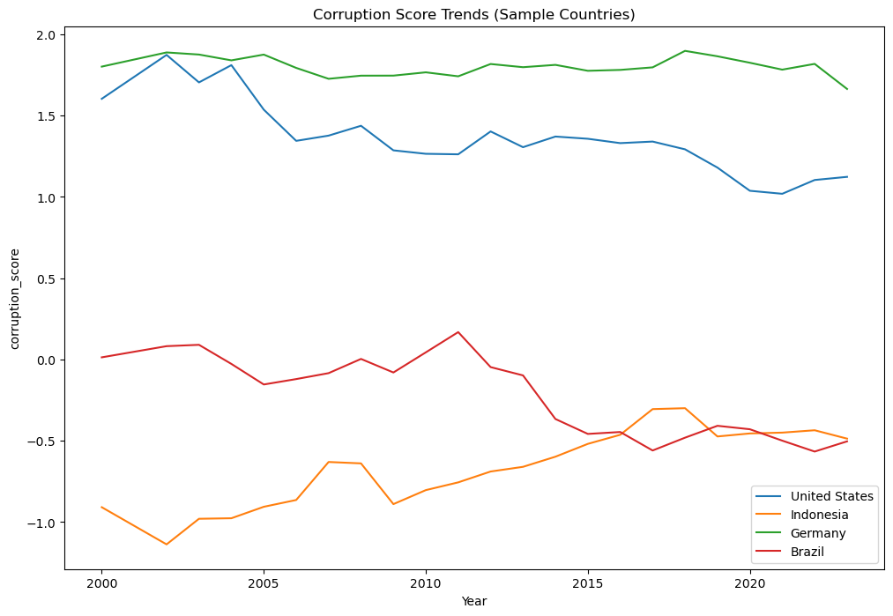
plt.figure(figsize=(12, 8))
for country in sample_countries:
data = df_merged[df_merged['Country'] == country]
sns.lineplot(x=data['Year'], y=data['political_stability_score'], label=country)
plt.title('Political Stability Score Trends (Sample Countries)')
plt.legend()
plt.show()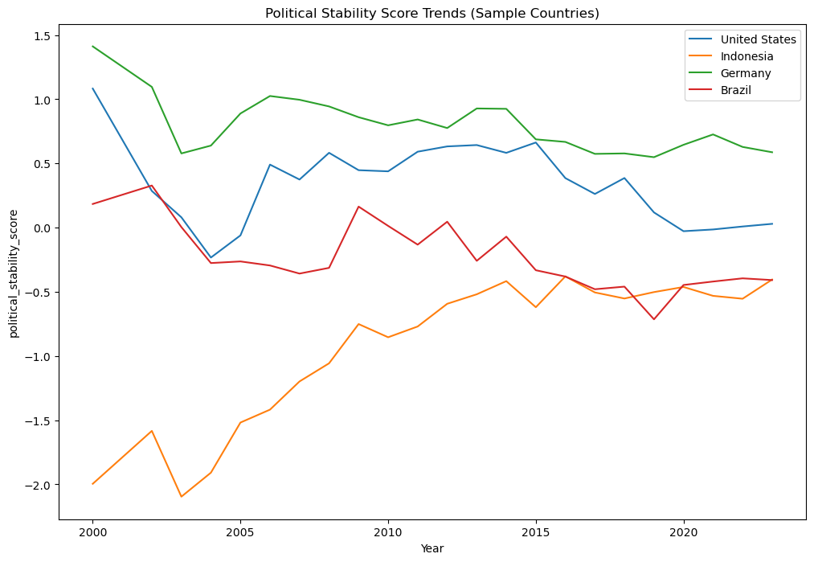
Since the the trends are too volatile and noisy for simple linear interpolation to make sense, we will do forward/backward fill instead. Governance scores tend to be stable over short periods — political structures don’t change drastically year-to-year. Forward/backward fill smooths out small gaps without distorting long-term patterns.
# Forward fill first, then backward fill (by country)
df_merged['corruption_score'] = df_merged.groupby('Country')['corruption_score'].ffill().bfill()
df_merged['political_stability_score'] = df_merged.groupby('Country')['political_stability_score'].ffill().bfill()C:\Users\ACER\AppData\Local\Temp\ipykernel_8768\3354211783.py:2: FutureWarning: Downcasting object dtype arrays on .fillna, .ffill, .bfill is deprecated and will change in a future version. Call result.infer_objects(copy=False) instead. To opt-in to the future behavior, set `pd.set_option('future.no_silent_downcasting', True)`
df_merged['corruption_score'] = df_merged.groupby('Country')['corruption_score'].ffill().bfill()
C:\Users\ACER\AppData\Local\Temp\ipykernel_8768\3354211783.py:3: FutureWarning: Downcasting object dtype arrays on .fillna, .ffill, .bfill is deprecated and will change in a future version. Call result.infer_objects(copy=False) instead. To opt-in to the future behavior, set `pd.set_option('future.no_silent_downcasting', True)`
df_merged['political_stability_score'] = df_merged.groupby('Country')['political_stability_score'].ffill().bfill()Histograms of all the features
df_merged[['FDI (% of GDP)', 'GDP Growth (%)', 'Inflation (%)',
'Trade Balance (% of GDP)', 'Unemployment (%)',
'corruption_score', 'political_stability_score']].hist(bins=20, figsize=(15, 12))
plt.show()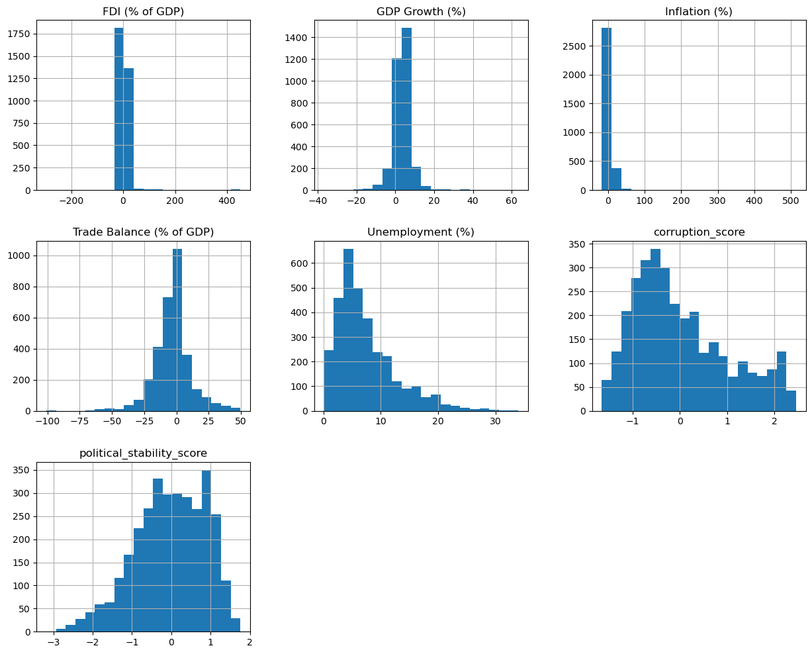
Scatter Plots between all the features
sns.pairplot(df_merged[['FDI (% of GDP)', 'GDP Growth (%)', 'Inflation (%)',
'Trade Balance (% of GDP)', 'Unemployment (%)',
'corruption_score', 'political_stability_score']])
plt.show()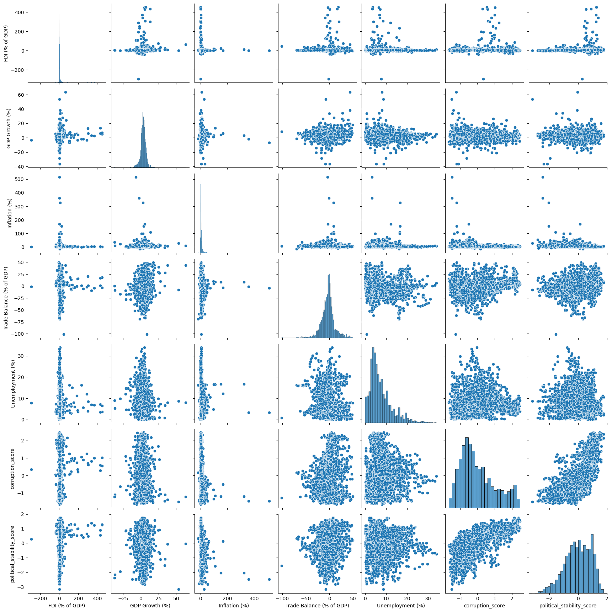
Handling outliers
From the pairplot, we can already see some extreme outliers:
- FDI (% of GDP) → Some countries have very large FDI percentages (over 200%) — probably financial hubs or tax havens.
- GDP Growth (%) → A few points showing growth rates beyond ±50% — likely data entry issues or extraordinary events (e.g., hyperinflation or post-crisis rebounds).
- Inflation (%) → Some very high spikes — possibly reflecting hyperinflation in unstable economies.
We’ll clip values at the 1st percentile and 99th percentile to avoid extreme values distorting the model
# Clip extreme outliers for FDI, GDP growth, inflation, trade balance, and unemployment
for col in ['FDI (% of GDP)', 'GDP Growth (%)', 'Inflation (%)',
'Trade Balance (% of GDP)', 'Unemployment (%)']:
lower_bound = df_merged[col].quantile(0.01)
upper_bound = df_merged[col].quantile(0.99)
df_merged[col] = np.clip(df_merged[col], lower_bound, upper_bound)Summary Statistics
df_merged.head()| Country | Year | FDI (% of GDP) | GDP Growth (%) | Inflation (%) | Trade Balance (% of GDP) | Unemployment (%) | corruption_score | political_stability_score | |
|---|---|---|---|---|---|---|---|---|---|
| 0 | Albania | 2000 | 4.108776 | 6.946217 | 0.050018 | -23.223502 | 19.023 | -0.855564 | -0.539990 |
| 1 | Albania | 2001 | 5.285433 | 8.293313 | 3.107588 | -23.824202 | 18.570 | -0.855564 | -0.539990 |
| 2 | Albania | 2002 | 3.104827 | 4.536524 | 7.770526 | -26.633836 | 17.891 | -0.845341 | -0.297719 |
| 3 | Albania | 2003 | 3.172708 | 5.528637 | 0.484003 | -25.325788 | 16.985 | -0.853787 | -0.309780 |
| 4 | Albania | 2004 | 4.750175 | 5.514668 | 2.280019 | -22.612066 | 16.306 | -0.723732 | -0.427260 |
# Keep only numeric columns (including political and corruption scores)
numeric_cols = df_merged[['FDI (% of GDP)', 'GDP Growth (%)', 'Inflation (%)',
'Trade Balance (% of GDP)', 'Unemployment (%)',
'corruption_score', 'political_stability_score']]
# Generate detailed summary statistics
summary_stats = numeric_cols.describe()
# Add skewness and kurtosis manually
summary_stats.loc['skewness'] = numeric_cols.skew()
summary_stats.loc['kurtosis'] = numeric_cols.kurt()
# Add missing values count
summary_stats.loc['missing_values'] = numeric_cols.isna().sum()
# Display the table
summary_stats| FDI (% of GDP) | GDP Growth (%) | Inflation (%) | Trade Balance (% of GDP) | Unemployment (%) | corruption_score | political_stability_score | |
|---|---|---|---|---|---|---|---|
| count | 3216.000000 | 3216.000000 | 3216.000000 | 3216.000000 | 3216.000000 | 3216.000000 | 3216.000000 |
| mean | 4.567383 | 3.611613 | 5.101277 | -2.956122 | 7.376744 | 0.022787 | -0.029331 |
| std | 7.398463 | 3.932707 | 5.858932 | 13.519712 | 5.169110 | 0.999245 | 0.895415 |
| min | -5.775044 | -8.915783 | -1.609862 | -44.766810 | 0.525050 | -1.645761 | -3.180352 |
| 25% | 1.227833 | 1.707613 | 1.674346 | -10.124945 | 3.684000 | -0.739934 | -0.631116 |
| 50% | 2.780430 | 3.757940 | 3.467669 | -2.239996 | 5.941500 | -0.229833 | 0.025293 |
| 75% | 5.236998 | 5.847058 | 6.694459 | 3.283358 | 9.834000 | 0.662200 | 0.709210 |
| max | 52.546742 | 15.270059 | 36.937586 | 36.981781 | 24.780300 | 2.459118 | 1.758681 |
| skewness | 4.068754 | -0.309317 | 2.819301 | 0.060350 | 1.249162 | 0.682238 | -0.452258 |
| kurtosis | 20.940360 | 1.607340 | 10.776682 | 1.470324 | 1.286698 | -0.463872 | -0.295503 |
| missing_values | 0.000000 | 0.000000 | 0.000000 | 0.000000 | 0.000000 | 0.000000 | 0.000000 |
Summary Statistics Analysis
1. FDI (% of GDP)
- Mean = 4.37% – On average, FDI represents a significant part of GDP.
- High standard deviation (7.19%) – Large variability across countries and time periods.
- Positive skewness (4.18) – Strong right skew, indicating that some countries attract significantly more FDI than others.
- High kurtosis (22.20) – Heavy tails, suggesting rare but extreme FDI spikes (e.g., large capital inflows to certain economies).
Insight: The distribution of FDI is highly uneven, which may require addressing outliers during modeling.
2. GDP Growth (%)
- Mean = 3.58% – Moderate growth rate on average.
- Negative skewness (-0.48) – Slight left skew, suggesting more frequent negative growth periods than extreme positive growth.
- Low kurtosis (1.67) – Relatively normal distribution, with no heavy tails.
Insight: GDP growth shows modest variation, implying that most countries experience small growth fluctuations rather than large swings.
3. Inflation (%)
- Mean = 5.13% – Moderate inflation rate across the sample.
- Positive skewness (2.88) – Indicates that some countries experience extreme inflation spikes (e.g., hyperinflation).
- High kurtosis (11.10) – Strong outliers, reflecting occasional inflation crises.
Insight: High kurtosis and skewness suggest that inflation crises may need to be treated as special cases in the model.
4. Trade Balance (% of GDP)
- Mean = -2.80% – Most countries have a trade deficit.
- Large spread (std = 12.70%) – Suggests trade balance is highly volatile.
- Low skewness (-0.09) – Almost symmetric distribution.
- Low kurtosis (1.71) – Consistent distribution with no major outliers.
Insight: Trade balance behaves more stably than inflation or FDI, but deficits dominate the overall trend.
5. Unemployment (%)
- Mean = 7.43% – Moderate global unemployment rate.
- Positive skewness (1.26) – Indicates that some countries face structural unemployment issues.
- Low kurtosis (1.20) – Relatively consistent distribution.
Insight: Unemployment has a moderate spread, but not many extreme cases, which suggests relatively stable labor market trends.
6. Corruption Score
- Mean = 0.08 – On average, countries have weak-to-moderate control of corruption.
- Positive skewness (0.66) – More countries have lower corruption control than higher.
- Negative kurtosis (-0.55) – Lighter tails, indicating fewer extreme cases of corruption control.
Insight: Corruption control varies moderately across countries, indicating potential for non-linear effects in the model.
7. Political Stability Score
- Mean = -0.001 – Political stability hovers around neutral levels on average.
- Negative skewness (-0.43) – More countries experience mild instability than strong stability.
- Negative kurtosis (-0.34) – Less variation and fewer extreme cases of political stability.
Insight: Political stability is less volatile than corruption, suggesting more consistent long-term trends.
Takeaways for the Model
- FDI, Inflation, and Corruption – Show heavy tails, which could make tree-based models (like XGBoost) more effective than linear models.
- GDP Growth and Political Stability – More balanced distributions, suggesting they could perform well with linear models like panel regression.
- Trade Balance and Unemployment – Moderate spread and skew, which should perform consistently across different models.
- High kurtosis in FDI and Inflation – May require testing the effect of outliers on model performance through clipping or transformation.
Summary for the Report
- FDI and inflation have highly skewed distributions and heavy tails, reflecting occasional economic shocks.
- GDP growth and trade balance are more stable, implying steady macroeconomic patterns.
- Political stability and corruption scores have moderate skewness and low variance, indicating consistent governance trends.
- The presence of heavy outliers in FDI and inflation may require testing models with and without outlier clipping.
- No missing values remain, ensuring the dataset is clean and ready for modeling.
highest_trade_balance = df_merged.loc[df_merged['Trade Balance (% of GDP)'].idxmax()]
print(highest_trade_balance[['Year','Country', 'Trade Balance (% of GDP)']])Year 2007
Country Azerbaijan
Trade Balance (% of GDP) 36.981781
Name: 151, dtype: objectCorrelation Matrix
# Keep only numeric columns
numeric_df = df_merged.select_dtypes(include=['float64', 'int64'])plt.figure(figsize=(10, 8))
sns.heatmap(numeric_df.corr(), annot=True, cmap='RdBu_r', center=0,
cbar_kws={'shrink': 0.8}, linewidths=0.5, square=True)
plt.title("Enhanced Correlation Matrix", fontsize=14, weight='bold')
plt.show()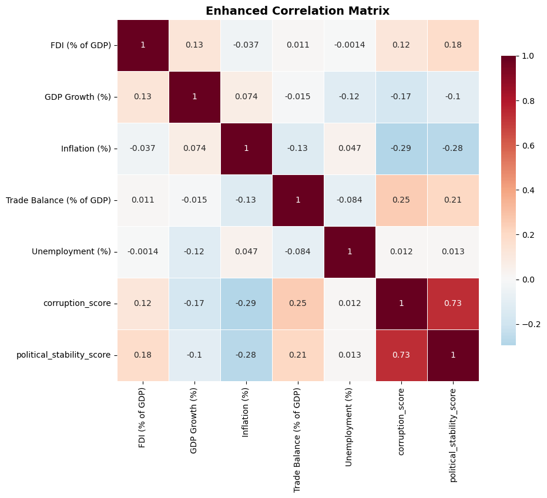
Histogram of FDI
plt.figure(figsize=(8, 5))
sns.histplot(df_merged['FDI (% of GDP)'], bins=20, kde=True, color='royalblue', edgecolor='black', alpha=0.7)
plt.axvline(df_merged['FDI (% of GDP)'].mean(), color='red', linestyle='dashed', linewidth=1, label=f"Mean: {df_merged['FDI (% of GDP)'].mean():.2f}")
plt.axvline(df_merged['FDI (% of GDP)'].median(), color='green', linestyle='dashed', linewidth=1, label=f"Median: {df_merged['FDI (% of GDP)'].median():.2f}")
plt.xlabel('FDI (% of GDP)', fontsize=12)
plt.ylabel('Frequency', fontsize=12)
# plt.title('Distribution of FDI (% of GDP)', fontsize=14, weight='bold')
plt.legend()
sns.despine()
plt.show()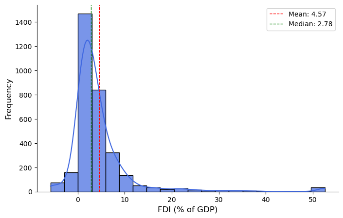
plt.figure(figsize=(8, 5))
sns.histplot(df_merged['GDP Growth (%)'], bins=20, kde=True, color='royalblue', edgecolor='black', alpha=0.7)
plt.axvline(df_merged['GDP Growth (%)'].mean(), color='red', linestyle='dashed', linewidth=1, label=f"Mean: {df_merged['GDP Growth (%)'].mean():.2f}")
plt.axvline(df_merged['GDP Growth (%)'].median(), color='green', linestyle='dashed', linewidth=1, label=f"Median: {df_merged['GDP Growth (%)'].median():.2f}")
plt.xlabel('GDP Growth (%)', fontsize=12)
plt.ylabel('Frequency', fontsize=12)
plt.legend()
sns.despine()
plt.show()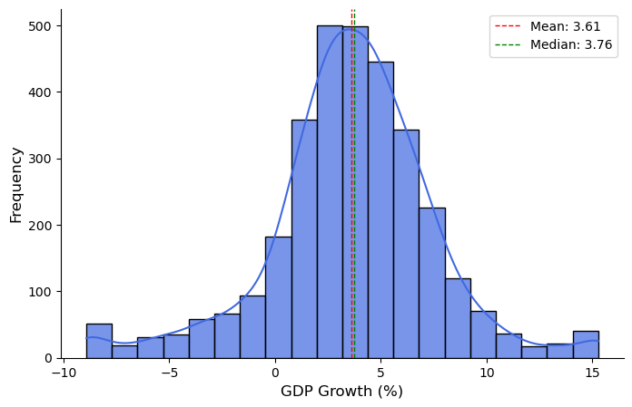
variables_to_plot = ['Inflation (%)', 'Trade Balance (% of GDP)', 'Unemployment (%)', 'corruption_score', 'political_stability_score']
for var in variables_to_plot:
plt.figure(figsize=(8, 5))
sns.histplot(df_merged[var], bins=20, kde=True, color='royalblue', edgecolor='black', alpha=0.7)
plt.axvline(df_merged[var].mean(), color='red', linestyle='dashed', linewidth=1, label=f"Mean: {df_merged[var].mean():.2f}")
plt.axvline(df_merged[var].median(), color='green', linestyle='dashed', linewidth=1, label=f"Median: {df_merged[var].median():.2f}")
plt.xlabel(var, fontsize=12)
plt.ylabel('Frequency', fontsize=12)
plt.legend()
sns.despine()
plt.show()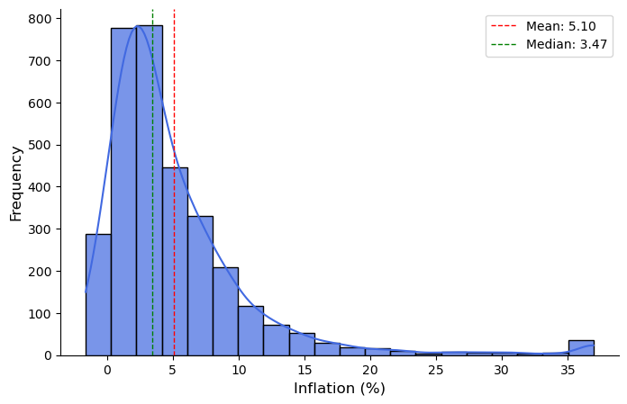
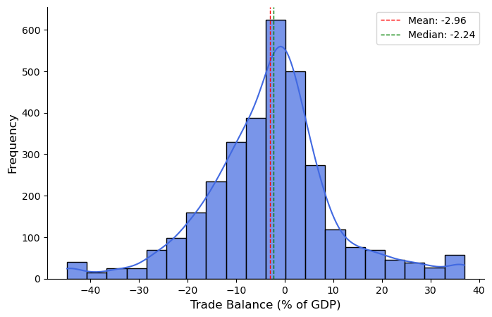
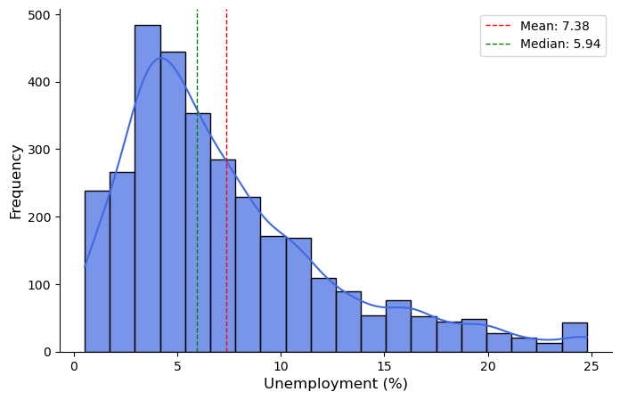
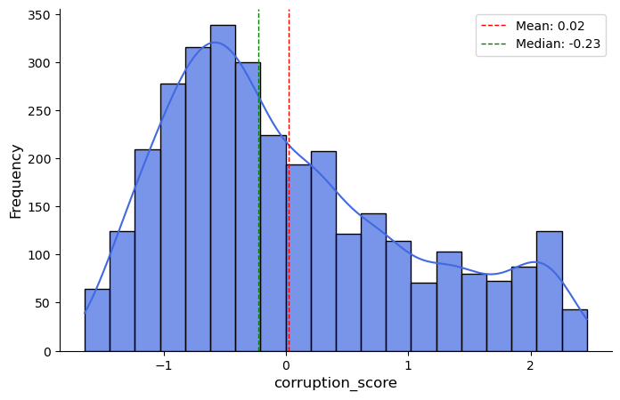
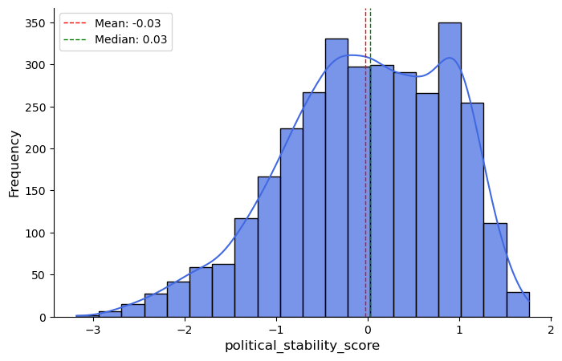
df_merged[['FDI (% of GDP)', 'GDP Growth (%)', 'Inflation (%)',
'Trade Balance (% of GDP)', 'Unemployment (%)',
'corruption_score', 'political_stability_score']].hist(bins=20, figsize=(15, 12))
plt.show()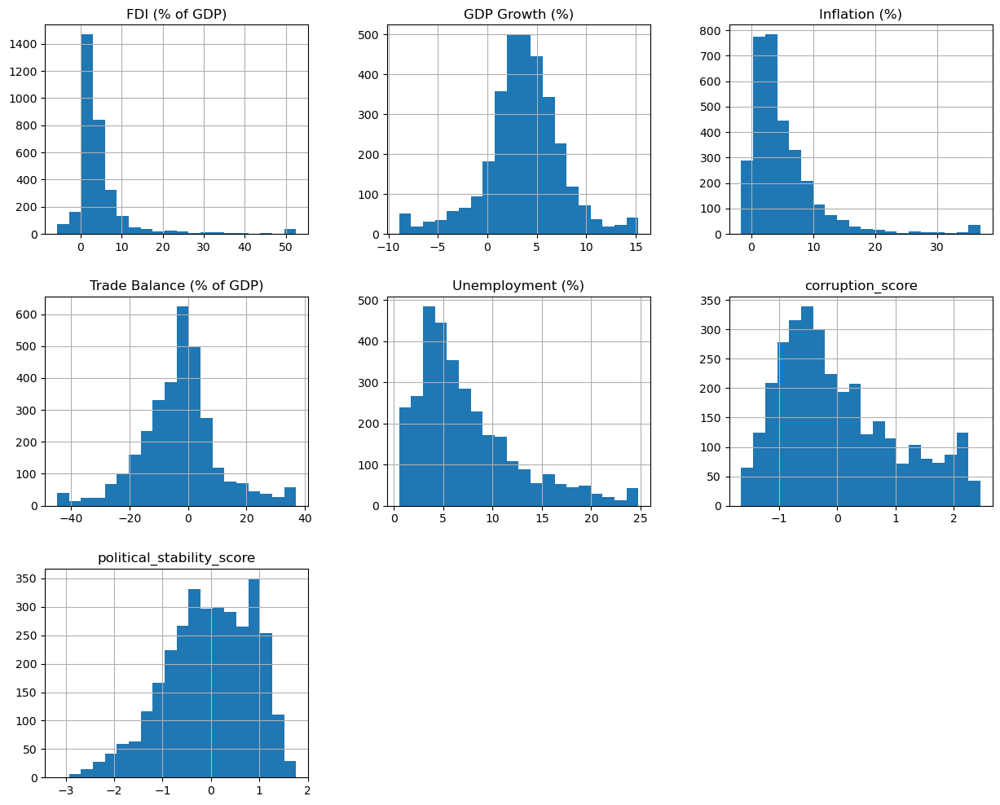
Scatter Plots between all the features
sns.pairplot(df_merged[['FDI (% of GDP)', 'GDP Growth (%)', 'Inflation (%)',
'Trade Balance (% of GDP)', 'Unemployment (%)',
'corruption_score', 'political_stability_score']])
plt.show()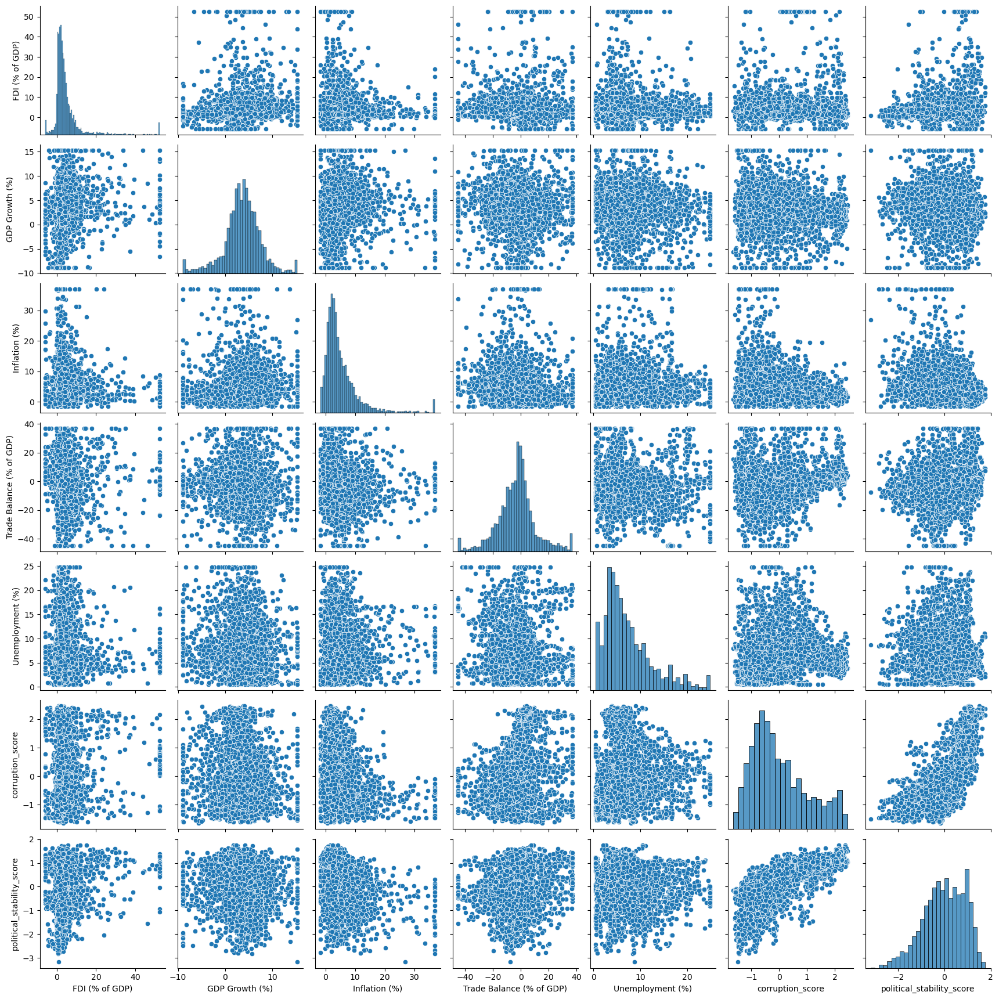
Let’s check for the existence of Multicolinearity
# Select only numeric predictor variables
variables = df_merged[['FDI (% of GDP)', 'Inflation (%)', 'Unemployment (%)',
'Trade Balance (% of GDP)', 'corruption_score', 'political_stability_score']]
# Calculate VIF for each variable
vif = pd.DataFrame()
vif['Variable'] = variables.columns
vif['VIF'] = [variance_inflation_factor(variables.values, i) for i in range(variables.shape[1])]
print(vif) Variable VIF
0 FDI (% of GDP) 1.293786
1 Inflation (%) 1.628504
2 Unemployment (%) 1.673234
3 Trade Balance (% of GDP) 1.133830
4 corruption_score 2.230314
5 political_stability_score 2.221732Let’s bin values into categories
df_pivot.columnsIndex(['Country', 'Year', 'FDI (% of GDP)', 'GDP Growth (%)', 'Inflation (%)',
'Trade Balance (% of GDP)', 'Unemployment (%)'],
dtype='object', name='Indicator')# Create 5 categories based on quantiles
df_merged['corruption_level'] = pd.qcut(
df_merged['corruption_score'], q=5, labels=['Very Low', 'Low', 'Moderate', 'High', 'Very High']
)
df_merged['political_stability_level'] = pd.qcut(
df_merged['political_stability_score'], q=5, labels=['Very Low', 'Low', 'Moderate', 'High', 'Very High']
)plt.figure(figsize=(12, 6))
# Plot mean FDI and GDP growth over time
df_grouped = df_merged.groupby('Year')[['FDI (% of GDP)', 'GDP Growth (%)']].mean()
sns.lineplot(data=df_grouped, x=df_grouped.index, y='FDI (% of GDP)', label='FDI (% of GDP)', color='blue')
sns.lineplot(data=df_grouped, x=df_grouped.index, y='GDP Growth (%)', label='GDP Growth (%)', color='red')
plt.axhline(0, color='gray', linestyle='--')
# plt.title('Mean FDI and GDP Growth Over Time')
plt.ylabel('Percentage')
plt.xlabel('Year')
plt.legend()
plt.show()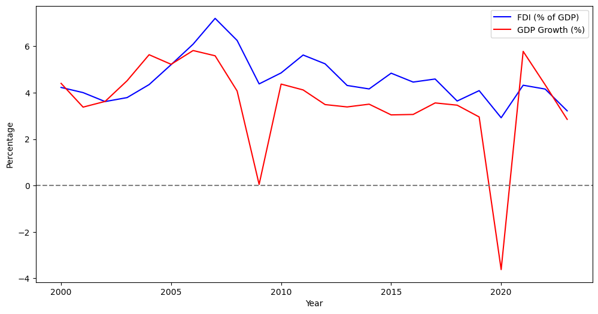
sns.lmplot(x='FDI (% of GDP)', y='GDP Growth (%)',
data=df_merged, aspect=1.5)
plt.title("Effect of FDI on GDP Growth (No Interaction)")
plt.show()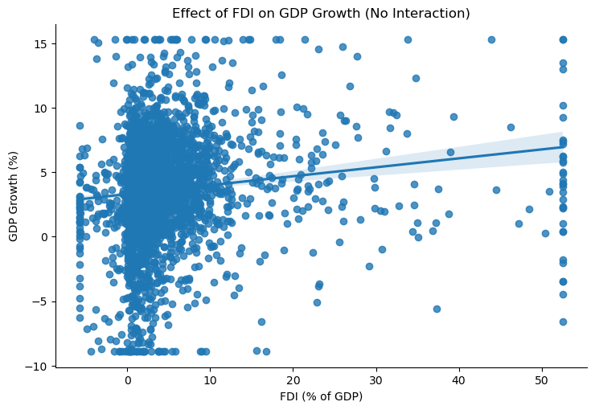
sns.lmplot(x='FDI (% of GDP)', y='GDP Growth (%)', hue='corruption_level',
data=df_merged, aspect=1.5)
# plt.title("Effect of FDI on GDP Growth by Corruption Level")
plt.show()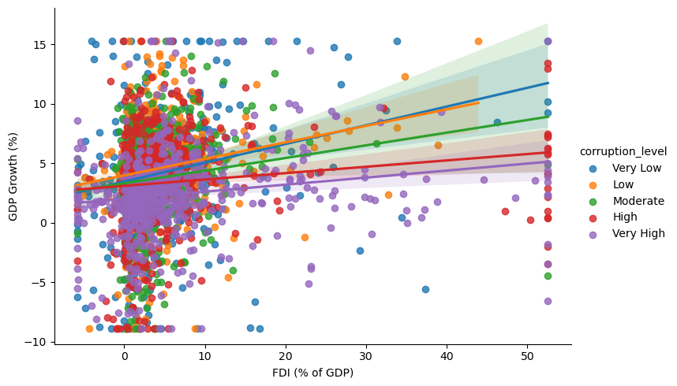
sns.lmplot(x='FDI (% of GDP)', y='GDP Growth (%)', hue='political_stability_level',
data=df_merged, aspect=1.5)
# plt.title("Effect of FDI on GDP Growth by Political Stability Level")
plt.show()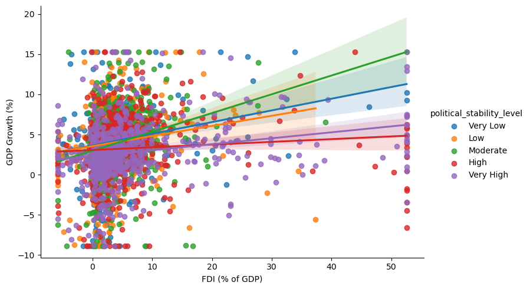
Modeling
import pandas as pd
import statsmodels.api as sm
from sklearn.tree import DecisionTreeRegressor
from xgboost import XGBRegressor
from sklearn.preprocessing import OneHotEncoder
from sklearn.model_selection import train_test_split
from sklearn.metrics import mean_squared_error, r2_score
# Load dataset
df = df_mergeddf_merged.columnsIndex(['Country', 'Year', 'FDI (% of GDP)', 'GDP Growth (%)', 'Inflation (%)',
'Trade Balance (% of GDP)', 'Unemployment (%)', 'corruption_score',
'political_stability_score', 'corruption_level',
'political_stability_level'],
dtype='object')Panel Regression
import pandas as pd
import statsmodels.api as sm
# Copy your main DataFrame
df_fe = df_merged.copy()
# --- STEP 1: One-hot encode the categorical levels (drop first to avoid multicollinearity)
level_dummies = pd.get_dummies(df_fe[['corruption_level', 'political_stability_level']],
drop_first=True).astype(int)
# --- STEP 2: Create interaction terms manually
# We multiply FDI with each dummy column to form interactions
for col in level_dummies.columns:
df_fe[f'FDI_x_{col}'] = df_fe['FDI (% of GDP)'] * level_dummies[col]
# --- STEP 3: Select core numeric variables
X_core = df_fe[['FDI (% of GDP)', 'Inflation (%)', 'Unemployment (%)', 'Trade Balance (% of GDP)']]
# --- STEP 4: Create country dummies
country_dummies = pd.get_dummies(df_fe['Country'], drop_first=True).astype(int)
# --- STEP 5: Combine all predictors
# Use level dummies and interaction terms
interaction_terms = df_fe.filter(like='FDI_x_')
X_panel = pd.concat([X_core, level_dummies, interaction_terms, country_dummies], axis=1)
# --- STEP 6: Ensure all are numeric
X_panel = X_panel.apply(pd.to_numeric, errors='coerce')
y_panel = pd.to_numeric(df_fe['GDP Growth (%)'], errors='coerce')
# --- STEP 7: Drop rows with any missing values
panel_data = pd.concat([y_panel, X_panel], axis=1).dropna()
y_clean = panel_data.iloc[:, 0]
X_clean = sm.add_constant(panel_data.iloc[:, 1:])
# --- STEP 8: Fit the OLS model
panel_model = sm.OLS(y_clean, X_clean)
panel_results = panel_model.fit()
# --- STEP 9: Output results
print(panel_results.summary()) OLS Regression Results
==============================================================================
Dep. Variable: GDP Growth (%) R-squared: 0.205
Model: OLS Adj. R-squared: 0.166
Method: Least Squares F-statistic: 5.173
Date: Tue, 29 Apr 2025 Prob (F-statistic): 1.86e-74
Time: 23:52:54 Log-Likelihood: -8596.9
No. Observations: 3216 AIC: 1.750e+04
Df Residuals: 3062 BIC: 1.844e+04
Df Model: 153
Covariance Type: nonrobust
=============================================================================================================
coef std err t P>|t| [0.025 0.975]
-------------------------------------------------------------------------------------------------------------
const 5.4198 0.988 5.487 0.000 3.483 7.356
FDI (% of GDP) 0.1912 0.032 6.015 0.000 0.129 0.254
Inflation (%) -0.0008 0.014 -0.056 0.955 -0.029 0.028
Unemployment (%) -0.1791 0.032 -5.668 0.000 -0.241 -0.117
Trade Balance (% of GDP) 0.0545 0.011 4.957 0.000 0.033 0.076
corruption_level_Low 0.1196 0.348 0.343 0.731 -0.563 0.802
corruption_level_Moderate -0.3146 0.444 -0.709 0.478 -1.185 0.555
corruption_level_High -0.3636 0.565 -0.643 0.520 -1.472 0.745
corruption_level_Very High 0.1568 0.763 0.205 0.837 -1.340 1.653
political_stability_level_Low 0.3531 0.320 1.103 0.270 -0.275 0.981
political_stability_level_Moderate 0.8117 0.372 2.184 0.029 0.083 1.540
political_stability_level_High 2.1601 0.463 4.662 0.000 1.252 3.069
political_stability_level_Very High 2.5317 0.571 4.431 0.000 1.411 3.652
FDI_x_corruption_level_Low 0.0418 0.048 0.871 0.384 -0.052 0.136
FDI_x_corruption_level_Moderate 0.0644 0.055 1.174 0.240 -0.043 0.172
FDI_x_corruption_level_High 0.0140 0.054 0.261 0.794 -0.091 0.119
FDI_x_corruption_level_Very High -0.0105 0.055 -0.189 0.850 -0.119 0.098
FDI_x_political_stability_level_Low 0.0112 0.048 0.233 0.815 -0.083 0.105
FDI_x_political_stability_level_Moderate 0.0193 0.049 0.391 0.695 -0.077 0.116
FDI_x_political_stability_level_High -0.1666 0.055 -3.033 0.002 -0.274 -0.059
FDI_x_political_stability_level_Very High -0.1195 0.061 -1.972 0.049 -0.238 -0.001
Algeria -0.5420 1.116 -0.486 0.627 -2.730 1.646
Angola 0.7279 1.177 0.618 0.536 -1.581 3.036
Armenia 3.0960 1.045 2.964 0.003 1.048 5.144
Australia -4.4841 1.324 -3.386 0.001 -7.080 -1.888
Austria -5.9168 1.323 -4.471 0.000 -8.512 -3.322
Azerbaijan -1.6818 1.215 -1.385 0.166 -4.063 0.700
Bahamas, The -4.3211 1.274 -3.392 0.001 -6.819 -1.823
Bahrain -3.1986 1.254 -2.551 0.011 -5.657 -0.740
Bangladesh 1.5263 1.168 1.306 0.191 -0.764 3.817
Belarus -1.8263 1.117 -1.636 0.102 -4.016 0.363
Belgium -5.3940 1.289 -4.186 0.000 -7.920 -2.867
Belize -2.4571 1.113 -2.207 0.027 -4.640 -0.274
Benin -1.7426 1.145 -1.523 0.128 -3.987 0.501
Bolivia -2.2143 1.133 -1.955 0.051 -4.435 0.007
Bosnia and Herzegovina 1.6995 1.093 1.555 0.120 -0.443 3.842
Botswana -0.8565 1.231 -0.696 0.487 -3.270 1.557
Brazil -2.4942 1.098 -2.272 0.023 -4.647 -0.341
Brunei Darussalam -7.5896 1.299 -5.843 0.000 -10.137 -5.043
Bulgaria -2.6468 1.118 -2.368 0.018 -4.838 -0.455
Burkina Faso 0.5527 1.144 0.483 0.629 -1.691 2.796
Cabo Verde 0.5353 1.176 0.455 0.649 -1.771 2.842
Cambodia 0.3098 1.178 0.263 0.793 -2.001 2.620
Cameroon -1.1626 1.153 -1.008 0.313 -3.423 1.098
Canada -4.9821 1.310 -3.802 0.000 -7.551 -2.413
Central African Republic -1.6754 1.158 -1.447 0.148 -3.946 0.595
Chad -1.4136 1.212 -1.166 0.244 -3.791 0.964
Chile -2.9251 1.273 -2.298 0.022 -5.421 -0.429
China 2.5385 1.139 2.229 0.026 0.306 4.771
Colombia -0.1553 1.129 -0.138 0.891 -2.369 2.059
Congo, Dem. Rep. -0.2028 1.178 -0.172 0.863 -2.513 2.108
Congo, Rep. -2.2057 1.171 -1.883 0.060 -4.502 0.091
Costa Rica -2.1271 1.180 -1.803 0.071 -4.440 0.186
Cote d'Ivoire -1.2871 1.149 -1.120 0.263 -3.539 0.965
Croatia -2.7634 1.116 -2.476 0.013 -4.952 -0.575
Cyprus -3.6381 1.325 -2.747 0.006 -6.235 -1.041
Czechia -4.6058 1.227 -3.754 0.000 -7.011 -2.200
Denmark -5.9847 1.330 -4.499 0.000 -8.593 -3.376
Dominican Republic -0.9833 1.090 -0.902 0.367 -3.121 1.154
Ecuador -1.9893 1.135 -1.753 0.080 -4.214 0.235
Egypt, Arab Rep. 0.1930 1.090 0.177 0.859 -1.945 2.331
El Salvador -2.7323 1.100 -2.483 0.013 -4.890 -0.575
Equatorial Guinea -4.3532 1.219 -3.572 0.000 -6.742 -1.964
Estonia -2.6888 1.254 -2.145 0.032 -5.147 -0.231
Fiji -4.1812 1.168 -3.580 0.000 -6.471 -1.891
Finland -5.5107 1.309 -4.211 0.000 -8.077 -2.945
France -4.5225 1.269 -3.563 0.000 -7.011 -2.034
Gabon -3.6367 1.177 -3.089 0.002 -5.945 -1.328
Gambia, The -2.1348 1.070 -1.995 0.046 -4.233 -0.037
Georgia 1.8479 1.117 1.655 0.098 -0.342 4.037
Germany -5.9433 1.302 -4.564 0.000 -8.497 -3.390
Ghana -0.0419 1.145 -0.037 0.971 -2.287 2.204
Greece -2.7080 1.103 -2.455 0.014 -4.871 -0.545
Guatemala -1.3699 1.136 -1.205 0.228 -3.598 0.858
Guinea-Bissau -0.9649 1.156 -0.835 0.404 -3.231 1.301
Haiti -1.0234 1.110 -0.922 0.356 -3.199 1.152
Honduras -1.0723 1.104 -0.971 0.332 -3.237 1.093
Hungary -4.6349 1.190 -3.896 0.000 -6.968 -2.302
Iceland -4.5610 1.337 -3.412 0.001 -7.182 -1.940
India 1.9398 1.133 1.711 0.087 -0.283 4.162
Indonesia -0.2870 1.127 -0.255 0.799 -2.496 1.922
Iran, Islamic Rep. -0.4815 1.134 -0.425 0.671 -2.705 1.742
Iraq -0.0358 1.160 -0.031 0.975 -2.309 2.238
Ireland -3.8792 1.371 -2.829 0.005 -6.568 -1.191
Israel -0.8115 1.228 -0.661 0.509 -3.219 1.596
Italy -5.0459 1.163 -4.340 0.000 -7.326 -2.766
Jamaica -4.1558 1.107 -3.755 0.000 -6.326 -1.986
Japan -6.6970 1.342 -4.991 0.000 -9.328 -4.066
Jordan 0.9570 1.120 0.855 0.393 -1.238 3.152
Kazakhstan -0.8633 1.135 -0.761 0.447 -3.088 1.362
Kenya -0.1322 1.170 -0.113 0.910 -2.427 2.162
Korea, Rep. -2.6996 1.208 -2.234 0.026 -5.069 -0.330
Kuwait -4.5336 1.255 -3.613 0.000 -6.994 -2.073
Kyrgyz Republic -0.1485 1.164 -0.128 0.899 -2.431 2.134
Lao PDR 0.1167 1.153 0.101 0.919 -2.144 2.378
Latvia -1.2568 1.145 -1.098 0.272 -3.501 0.988
Lesotho 0.8926 1.126 0.793 0.428 -1.315 3.100
Lithuania -1.3293 1.167 -1.139 0.255 -3.617 0.958
Madagascar -2.9461 1.127 -2.615 0.009 -5.155 -0.737
Malaysia -2.2197 1.211 -1.833 0.067 -4.595 0.155
Mali -1.3810 1.136 -1.215 0.224 -3.609 0.847
Malta -4.9916 1.456 -3.428 0.001 -7.847 -2.136
Mauritania -2.0012 1.060 -1.888 0.059 -4.079 0.077
Mauritius -2.0694 1.186 -1.745 0.081 -4.395 0.256
Mexico -3.7983 1.133 -3.353 0.001 -6.019 -1.577
Moldova -1.1044 1.118 -0.988 0.323 -3.296 1.087
Mongolia -0.9286 1.146 -0.811 0.418 -3.175 1.317
Morocco -0.1916 1.097 -0.175 0.861 -2.343 1.960
Mozambique -1.3517 1.131 -1.195 0.232 -3.570 0.867
Namibia 0.2077 1.168 0.178 0.859 -2.082 2.497
Nepal 1.5921 1.096 1.453 0.146 -0.557 3.741
Netherlands -7.0955 1.360 -5.218 0.000 -9.762 -4.429
New Zealand -4.6304 1.334 -3.471 0.001 -7.246 -2.015
Nicaragua -1.9720 1.088 -1.812 0.070 -4.106 0.162
Niger -0.8008 1.148 -0.697 0.486 -3.052 1.451
Norway -6.5972 1.367 -4.827 0.000 -9.277 -3.918
Oman -4.4408 1.240 -3.582 0.000 -6.872 -2.010
Pakistan -0.8361 1.175 -0.712 0.477 -3.140 1.468
Panama -0.5613 1.113 -0.505 0.614 -2.743 1.620
Paraguay -2.2831 1.134 -2.014 0.044 -4.506 -0.060
Peru -1.5124 1.144 -1.322 0.186 -3.756 0.731
Philippines -0.1167 1.151 -0.101 0.919 -2.374 2.141
Poland -2.0565 1.171 -1.757 0.079 -4.352 0.239
Portugal -5.1775 1.222 -4.235 0.000 -7.574 -2.781
Qatar -2.6043 1.350 -1.929 0.054 -5.251 0.043
Romania -1.9684 1.118 -1.761 0.078 -4.160 0.223
Russian Federation -1.9822 1.158 -1.712 0.087 -4.252 0.287
Rwanda 4.3061 1.108 3.885 0.000 2.133 6.480
Samoa -3.0043 1.199 -2.506 0.012 -5.355 -0.654
Saudi Arabia -2.0228 1.195 -1.693 0.091 -4.366 0.320
Senegal -1.1809 1.125 -1.049 0.294 -3.388 1.026
Sierra Leone -0.1561 1.112 -0.140 0.888 -2.337 2.025
Singapore -5.3427 1.445 -3.697 0.000 -8.176 -2.509
Slovak Republic -2.1657 1.167 -1.855 0.064 -4.454 0.123
Slovenia -4.4154 1.226 -3.600 0.000 -6.820 -2.011
Solomon Islands -3.6403 1.161 -3.134 0.002 -5.918 -1.363
South Africa 0.3559 1.155 0.308 0.758 -1.908 2.620
Spain -2.3201 1.188 -1.952 0.051 -4.650 0.010
Sri Lanka -0.4233 1.145 -0.370 0.712 -2.669 1.822
Sweden -5.2272 1.322 -3.955 0.000 -7.819 -2.635
Switzerland -6.1988 1.352 -4.587 0.000 -8.849 -3.549
Tanzania 0.1016 1.129 0.090 0.928 -2.112 2.315
Thailand -3.0362 1.184 -2.564 0.010 -5.358 -0.715
Togo -1.4648 1.128 -1.298 0.194 -3.677 0.748
Tunisia -0.7907 1.092 -0.724 0.469 -2.933 1.351
Turkiye 1.5755 1.150 1.370 0.171 -0.680 3.831
Uganda 0.6673 1.154 0.578 0.563 -1.595 2.930
Ukraine -2.5013 1.096 -2.282 0.023 -4.651 -0.352
United Kingdom -4.8794 1.283 -3.804 0.000 -7.394 -2.364
United States -3.9253 1.279 -3.068 0.002 -6.434 -1.417
Uruguay -4.1670 1.281 -3.253 0.001 -6.678 -1.656
Vanuatu -3.8975 1.166 -3.341 0.001 -6.185 -1.610
Viet Nam -0.9252 1.135 -0.816 0.415 -3.150 1.299
Zambia -0.3413 1.096 -0.311 0.756 -2.490 1.807
==============================================================================
Omnibus: 308.517 Durbin-Watson: 1.662
Prob(Omnibus): 0.000 Jarque-Bera (JB): 884.731
Skew: -0.515 Prob(JB): 7.64e-193
Kurtosis: 5.354 Cond. No. 2.26e+03
==============================================================================
Notes:
[1] Standard Errors assume that the covariance matrix of the errors is correctly specified.
[2] The condition number is large, 2.26e+03. This might indicate that there are
strong multicollinearity or other numerical problems.This infers insignificant effects of either the corruption index and political stability to the relationship between FDI and GDP growth.
Let’s try something different: instead of level, we directly use the scores.
# Copy your main DataFrame
df_fe = df_merged.copy()
# --- Step 1: Create interaction terms (continuous version) ---
df_fe['FDI_x_Corruption'] = df_fe['FDI (% of GDP)'] * df_fe['corruption_score']
df_fe['FDI_x_Political'] = df_fe['FDI (% of GDP)'] * df_fe['political_stability_score']
# --- Step 2: Create country dummies (drop one to avoid multicollinearity) ---
country_dummies = pd.get_dummies(df_fe['Country'], drop_first=True).astype(int)
# --- Step 3: Select core independent variables ---
X_core = df_fe[['FDI (% of GDP)', 'corruption_score', 'political_stability_score',
'FDI_x_Corruption', 'FDI_x_Political', 'Inflation (%)',
'Unemployment (%)', 'Trade Balance (% of GDP)']]
# --- Step 4: Combine predictors ---
X_panel = pd.concat([X_core, country_dummies], axis=1)
# --- Step 5: Ensure all columns are numeric ---
X_panel = X_panel.apply(pd.to_numeric, errors='coerce')
y_panel = pd.to_numeric(df_fe['GDP Growth (%)'], errors='coerce')
# --- Step 6: Drop rows with missing values ---
panel_data = pd.concat([y_panel, X_panel], axis=1).dropna()
y_clean = panel_data.iloc[:, 0]
X_clean = sm.add_constant(panel_data.iloc[:, 1:])
# --- Step 7: Fit the OLS model ---
panel_model = sm.OLS(y_clean, X_clean)
panel_results = panel_model.fit()
# --- Step 8: Output results ---
print(panel_results.summary()) OLS Regression Results
==============================================================================
Dep. Variable: GDP Growth (%) R-squared: 0.201
Model: OLS Adj. R-squared: 0.164
Method: Least Squares F-statistic: 5.486
Date: Tue, 29 Apr 2025 Prob (F-statistic): 6.80e-76
Time: 23:52:54 Log-Likelihood: -8605.6
No. Observations: 3216 AIC: 1.750e+04
Df Residuals: 3074 BIC: 1.836e+04
Df Model: 141
Covariance Type: nonrobust
=============================================================================================
coef std err t P>|t| [0.025 0.975]
---------------------------------------------------------------------------------------------
const 6.8114 0.908 7.501 0.000 5.031 8.592
FDI (% of GDP) 0.1297 0.013 9.809 0.000 0.104 0.156
corruption_score -0.0021 0.345 -0.006 0.995 -0.679 0.675
political_stability_score 1.0896 0.215 5.056 0.000 0.667 1.512
FDI_x_Corruption -0.0205 0.016 -1.283 0.199 -0.052 0.011
FDI_x_Political -0.0497 0.022 -2.248 0.025 -0.093 -0.006
Inflation (%) 0.0061 0.015 0.420 0.675 -0.022 0.035
Unemployment (%) -0.1789 0.032 -5.658 0.000 -0.241 -0.117
Trade Balance (% of GDP) 0.0510 0.011 4.703 0.000 0.030 0.072
Algeria -0.5443 1.095 -0.497 0.619 -2.692 1.603
Angola 0.0831 1.154 0.072 0.943 -2.180 2.346
Armenia 2.8781 1.041 2.765 0.006 0.837 4.919
Australia -4.2233 1.358 -3.110 0.002 -6.886 -1.561
Austria -5.7943 1.320 -4.391 0.000 -8.382 -3.207
Azerbaijan -2.1148 1.170 -1.807 0.071 -4.410 0.180
Bahamas, The -4.2772 1.225 -3.491 0.000 -6.679 -1.875
Bahrain -3.6282 1.220 -2.974 0.003 -6.020 -1.237
Bangladesh 1.4016 1.139 1.231 0.218 -0.831 3.634
Belarus -2.1474 1.103 -1.947 0.052 -4.310 0.015
Belgium -5.3173 1.277 -4.164 0.000 -7.821 -2.813
Belize -2.6591 1.082 -2.457 0.014 -4.781 -0.537
Benin -1.9344 1.131 -1.711 0.087 -4.151 0.282
Bolivia -2.5231 1.123 -2.246 0.025 -4.726 -0.320
Bosnia and Herzegovina 1.3105 1.072 1.223 0.222 -0.791 3.412
Botswana -1.0416 1.202 -0.867 0.386 -3.397 1.314
Brazil -2.9899 1.080 -2.767 0.006 -5.108 -0.872
Brunei Darussalam -7.8670 1.243 -6.329 0.000 -10.304 -5.430
Bulgaria -2.8131 1.072 -2.625 0.009 -4.915 -0.712
Burkina Faso 0.0504 1.115 0.045 0.964 -2.135 2.236
Cabo Verde 0.2075 1.150 0.180 0.857 -2.047 2.462
Cambodia 0.0602 1.153 0.052 0.958 -2.200 2.320
Cameroon -1.4648 1.132 -1.294 0.196 -3.685 0.755
Canada -4.8179 1.355 -3.557 0.000 -7.474 -2.162
Central African Republic -1.1652 1.160 -1.005 0.315 -3.439 1.109
Chad -1.5533 1.201 -1.293 0.196 -3.908 0.802
Chile -2.9674 1.244 -2.385 0.017 -5.407 -0.528
China 2.1560 1.120 1.925 0.054 -0.040 4.352
Colombia -0.1519 1.100 -0.138 0.890 -2.310 2.006
Congo, Dem. Rep. 0.3173 1.207 0.263 0.793 -2.049 2.684
Congo, Rep. -2.4662 1.128 -2.185 0.029 -4.679 -0.254
Costa Rica -2.6247 1.143 -2.297 0.022 -4.865 -0.384
Cote d'Ivoire -1.1942 1.142 -1.046 0.296 -3.433 1.045
Croatia -3.1804 1.082 -2.939 0.003 -5.302 -1.059
Cyprus -5.3400 1.227 -4.351 0.000 -7.747 -2.933
Czechia -4.9112 1.155 -4.251 0.000 -7.177 -2.646
Denmark -5.7794 1.463 -3.950 0.000 -8.648 -2.911
Dominican Republic -1.2971 1.082 -1.199 0.231 -3.418 0.824
Ecuador -2.3186 1.118 -2.073 0.038 -4.511 -0.126
Egypt, Arab Rep. 0.1319 1.079 0.122 0.903 -1.984 2.248
El Salvador -3.1217 1.083 -2.883 0.004 -5.244 -0.999
Equatorial Guinea -4.4114 1.199 -3.678 0.000 -6.763 -2.060
Estonia -2.9815 1.220 -2.444 0.015 -5.373 -0.590
Fiji -4.4539 1.127 -3.951 0.000 -6.664 -2.244
Finland -5.5144 1.435 -3.844 0.000 -8.327 -2.702
France -4.4803 1.246 -3.594 0.000 -6.924 -2.036
Gabon -3.5713 1.169 -3.054 0.002 -5.864 -1.278
Gambia, The -2.2253 1.060 -2.099 0.036 -4.304 -0.147
Georgia 1.6595 1.087 1.526 0.127 -0.473 3.792
Germany -5.7755 1.351 -4.275 0.000 -8.425 -3.126
Ghana -0.4539 1.111 -0.409 0.683 -2.632 1.725
Greece -3.2959 1.079 -3.055 0.002 -5.411 -1.181
Guatemala -1.6981 1.120 -1.516 0.130 -3.895 0.499
Guinea-Bissau -1.4683 1.136 -1.292 0.196 -3.696 0.760
Haiti -1.3202 1.089 -1.212 0.226 -3.456 0.816
Honduras -1.3926 1.087 -1.281 0.200 -3.524 0.739
Hungary -5.2992 1.144 -4.633 0.000 -7.542 -3.056
Iceland -4.5682 1.388 -3.291 0.001 -7.290 -1.847
India 1.6177 1.104 1.465 0.143 -0.547 3.783
Indonesia -0.3269 1.122 -0.291 0.771 -2.527 1.873
Iran, Islamic Rep. -0.6696 1.117 -0.599 0.549 -2.861 1.521
Iraq 1.1036 1.200 0.920 0.358 -1.249 3.456
Ireland -3.5192 1.357 -2.594 0.010 -6.180 -0.859
Israel -1.0171 1.232 -0.826 0.409 -3.433 1.398
Italy -5.3226 1.117 -4.763 0.000 -7.514 -3.132
Jamaica -4.5920 1.075 -4.271 0.000 -6.700 -2.484
Japan -6.5173 1.284 -5.076 0.000 -9.035 -4.000
Jordan 0.5348 1.077 0.496 0.620 -1.578 2.647
Kazakhstan -1.2954 1.116 -1.161 0.246 -3.483 0.893
Kenya -0.3270 1.137 -0.288 0.774 -2.557 1.903
Korea, Rep. -3.1543 1.174 -2.688 0.007 -5.455 -0.853
Kuwait -5.0470 1.224 -4.124 0.000 -7.446 -2.648
Kyrgyz Republic -0.6983 1.133 -0.616 0.538 -2.919 1.523
Lao PDR -0.3635 1.129 -0.322 0.748 -2.577 1.850
Latvia -1.6688 1.101 -1.516 0.130 -3.827 0.490
Lesotho 0.1694 1.098 0.154 0.877 -1.984 2.323
Lithuania -1.8197 1.122 -1.622 0.105 -4.020 0.380
Madagascar -3.2897 1.111 -2.962 0.003 -5.467 -1.112
Malaysia -2.8129 1.174 -2.397 0.017 -5.114 -0.512
Mali -1.0695 1.141 -0.938 0.349 -3.306 1.167
Malta -4.6031 1.330 -3.460 0.001 -7.211 -1.995
Mauritania -1.8466 1.058 -1.745 0.081 -3.921 0.228
Mauritius -2.5043 1.116 -2.245 0.025 -4.692 -0.317
Mexico -4.1795 1.116 -3.745 0.000 -6.367 -1.992
Moldova -1.3734 1.113 -1.234 0.217 -3.555 0.809
Mongolia -1.4063 1.100 -1.278 0.201 -3.564 0.751
Morocco -0.8180 1.063 -0.770 0.441 -2.901 1.265
Mozambique -1.2433 1.112 -1.118 0.264 -3.423 0.937
Namibia -0.3299 1.116 -0.296 0.768 -2.519 1.859
Nepal 1.6439 1.079 1.524 0.128 -0.472 3.759
Netherlands -6.5989 1.431 -4.612 0.000 -9.405 -3.793
New Zealand -4.7761 1.441 -3.314 0.001 -7.602 -1.950
Nicaragua -2.2008 1.081 -2.037 0.042 -4.320 -0.082
Niger -0.8160 1.144 -0.713 0.476 -3.060 1.428
Norway -6.5352 1.440 -4.538 0.000 -9.359 -3.712
Oman -4.7827 1.193 -4.008 0.000 -7.122 -2.443
Pakistan -0.0184 1.204 -0.015 0.988 -2.378 2.342
Panama -0.4776 1.089 -0.438 0.661 -2.614 1.658
Paraguay -2.6527 1.120 -2.368 0.018 -4.849 -0.456
Peru -1.7952 1.125 -1.596 0.111 -4.001 0.411
Philippines -0.0392 1.140 -0.034 0.973 -2.274 2.196
Poland -2.4306 1.133 -2.145 0.032 -4.652 -0.209
Portugal -5.3579 1.186 -4.518 0.000 -7.683 -3.033
Qatar -2.7147 1.318 -2.060 0.039 -5.298 -0.131
Romania -2.3717 1.088 -2.180 0.029 -4.505 -0.238
Russian Federation -2.2315 1.135 -1.965 0.049 -4.458 -0.005
Rwanda 3.7308 1.086 3.435 0.001 1.601 5.861
Samoa -3.5139 1.118 -3.142 0.002 -5.707 -1.321
Saudi Arabia -2.7688 1.162 -2.383 0.017 -5.047 -0.491
Senegal -1.5300 1.108 -1.381 0.167 -3.703 0.643
Sierra Leone -0.3690 1.104 -0.334 0.738 -2.534 1.796
Singapore -4.5031 1.524 -2.955 0.003 -7.491 -1.515
Slovak Republic -2.5439 1.104 -2.305 0.021 -4.708 -0.380
Slovenia -4.5996 1.196 -3.847 0.000 -6.944 -2.255
Solomon Islands -4.0026 1.127 -3.552 0.000 -6.212 -1.793
South Africa -0.3611 1.136 -0.318 0.751 -2.589 1.867
Spain -2.6991 1.189 -2.270 0.023 -5.031 -0.367
Sri Lanka -0.9227 1.107 -0.834 0.404 -3.093 1.247
Sweden -5.0443 1.417 -3.559 0.000 -7.824 -2.265
Switzerland -6.1138 1.416 -4.316 0.000 -8.891 -3.336
Tanzania -0.2340 1.118 -0.209 0.834 -2.425 1.957
Thailand -3.2529 1.166 -2.790 0.005 -5.539 -0.967
Togo -1.8199 1.115 -1.632 0.103 -4.006 0.366
Tunisia -1.2703 1.067 -1.191 0.234 -3.362 0.821
Turkiye 1.0871 1.114 0.976 0.329 -1.097 3.271
Uganda 0.4042 1.131 0.357 0.721 -1.814 2.622
Ukraine -2.5797 1.089 -2.369 0.018 -4.715 -0.445
United Kingdom -4.7779 1.338 -3.571 0.000 -7.401 -2.155
United States -3.9578 1.263 -3.135 0.002 -6.433 -1.482
Uruguay -4.1651 1.241 -3.355 0.001 -6.599 -1.731
Vanuatu -4.2742 1.107 -3.863 0.000 -6.444 -2.105
Viet Nam -0.9813 1.128 -0.870 0.384 -3.193 1.230
Zambia -0.6167 1.085 -0.568 0.570 -2.744 1.511
==============================================================================
Omnibus: 316.742 Durbin-Watson: 1.652
Prob(Omnibus): 0.000 Jarque-Bera (JB): 883.653
Skew: -0.537 Prob(JB): 1.31e-192
Kurtosis: 5.333 Cond. No. 2.23e+03
==============================================================================
Notes:
[1] Standard Errors assume that the covariance matrix of the errors is correctly specified.
[2] The condition number is large, 2.23e+03. This might indicate that there are
strong multicollinearity or other numerical problems.Decision tree
# --- Step 1: Copy the dataset ---
df_tree = df_merged.copy()
# --- Step 2: Define score-based features ---
features = [
'FDI (% of GDP)', 'corruption_score', 'political_stability_score',
'Inflation (%)', 'Unemployment (%)', 'Trade Balance (% of GDP)'
]
X = df_tree[features]
y = df_tree['GDP Growth (%)']
param_grid = [
{'max_depth': 3, 'min_samples_leaf': 5},
{'max_depth': 3, 'min_samples_leaf': 10},
{'max_depth': 4, 'min_samples_leaf': 5},
{'max_depth': 4, 'min_samples_leaf': 10},
{'max_depth': 5, 'min_samples_leaf': 5},
{'max_depth': 5, 'min_samples_leaf': 10},
{'max_depth': 3, 'min_samples_leaf': 5, 'min_samples_split': 10},
{'max_depth': 4, 'min_samples_leaf': 5, 'min_samples_split': 20},
{'max_depth': 5, 'min_samples_leaf': 5, 'min_samples_split': 15},
{'max_depth': 6, 'min_samples_leaf': 10, 'min_samples_split': 10}, # Slightly more flexible tree
]
importance_records = []
for i, params in enumerate(param_grid):
tree = DecisionTreeRegressor(**params, random_state=42)
tree.fit(X, y)
importances = tree.feature_importances_
importance_df = pd.DataFrame({
'feature': X.columns,
f'importance_{i}': importances
})
importance_records.append(importance_df)
# --- Step 4: Combine and plot feature importances ---
importance_combined = importance_records[0]
for df in importance_records[1:]:
importance_combined = importance_combined.merge(df, on='feature')
# --- Step 5: Plot importance comparison ---
importance_combined.set_index('feature').plot(kind='barh', figsize=(10, 8))
plt.title("Feature Importance Across Decision Tree Settings (Score-Based)")
plt.xlabel("Importance Score")
plt.tight_layout()
plt.show()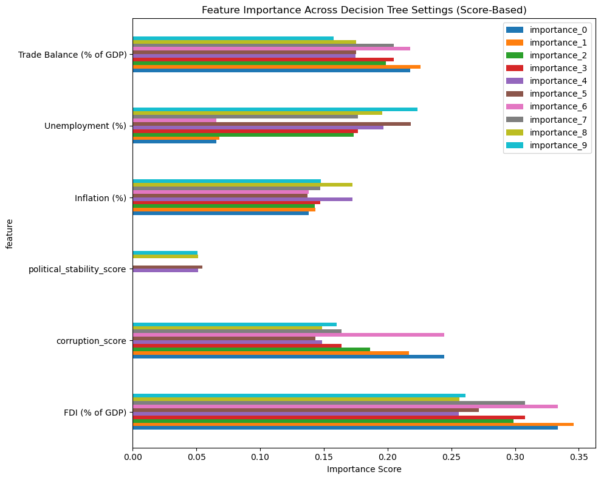
XGBoost
# --- Step 1: Copy the dataset ---
df_xgb = df_merged.copy()
# --- Step 2: Use score-based features (no levels) ---
features = [
'FDI (% of GDP)', 'corruption_score', 'political_stability_score',
'Inflation (%)', 'Unemployment (%)', 'Trade Balance (% of GDP)'
]
X = df_xgb[features]
y = df_xgb['GDP Growth (%)']
# --- Step 3: Define hyperparameter settings ---
xgb_param_grid = [
{'n_estimators': 100, 'max_depth': 3, 'learning_rate': 0.1},
{'n_estimators': 100, 'max_depth': 4, 'learning_rate': 0.1},
{'n_estimators': 100, 'max_depth': 5, 'learning_rate': 0.1},
{'n_estimators': 200, 'max_depth': 3, 'learning_rate': 0.1},
{'n_estimators': 200, 'max_depth': 4, 'learning_rate': 0.1},
{'n_estimators': 200, 'max_depth': 5, 'learning_rate': 0.1},
{'n_estimators': 100, 'max_depth': 3, 'learning_rate': 0.05},
{'n_estimators': 200, 'max_depth': 3, 'learning_rate': 0.05},
{'n_estimators': 100, 'max_depth': 4, 'learning_rate': 0.05},
{'n_estimators': 200, 'max_depth': 4, 'learning_rate': 0.05},
]
# --- Step 4: Train and collect feature importances ---
importance_records = []
for i, params in enumerate(param_grid):
model = XGBRegressor(**params, random_state=42)
model.fit(X, y)
importances = model.feature_importances_
importance_df = pd.DataFrame({
'feature': X.columns,
f'importance_{i}': importances
})
importance_records.append(importance_df)
# --- Step 5: Merge importance scores across models ---
importance_combined = importance_records[0]
for df in importance_records[1:]:
importance_combined = importance_combined.merge(df, on='feature')
# --- Step 6: Plot comparison ---
importance_combined.set_index('feature').plot(kind='barh', figsize=(10, 8))
plt.title("Feature Importance Across XGBoost Settings (Score-Based)")
plt.xlabel("Importance Score")
plt.tight_layout()
plt.show()c:\Users\ACER\anaconda3\envs\data_analysis\Lib\site-packages\xgboost\training.py:183: UserWarning: [23:52:55] WARNING: C:\actions-runner\_work\xgboost\xgboost\src\learner.cc:738:
Parameters: { "min_samples_leaf" } are not used.
bst.update(dtrain, iteration=i, fobj=obj)
c:\Users\ACER\anaconda3\envs\data_analysis\Lib\site-packages\xgboost\training.py:183: UserWarning: [23:52:55] WARNING: C:\actions-runner\_work\xgboost\xgboost\src\learner.cc:738:
Parameters: { "min_samples_leaf" } are not used.
bst.update(dtrain, iteration=i, fobj=obj)
c:\Users\ACER\anaconda3\envs\data_analysis\Lib\site-packages\xgboost\training.py:183: UserWarning: [23:52:55] WARNING: C:\actions-runner\_work\xgboost\xgboost\src\learner.cc:738:
Parameters: { "min_samples_leaf" } are not used.
bst.update(dtrain, iteration=i, fobj=obj)
c:\Users\ACER\anaconda3\envs\data_analysis\Lib\site-packages\xgboost\training.py:183: UserWarning: [23:52:55] WARNING: C:\actions-runner\_work\xgboost\xgboost\src\learner.cc:738:
Parameters: { "min_samples_leaf" } are not used.
bst.update(dtrain, iteration=i, fobj=obj)
c:\Users\ACER\anaconda3\envs\data_analysis\Lib\site-packages\xgboost\training.py:183: UserWarning: [23:52:55] WARNING: C:\actions-runner\_work\xgboost\xgboost\src\learner.cc:738:
Parameters: { "min_samples_leaf" } are not used.
bst.update(dtrain, iteration=i, fobj=obj)
c:\Users\ACER\anaconda3\envs\data_analysis\Lib\site-packages\xgboost\training.py:183: UserWarning: [23:52:55] WARNING: C:\actions-runner\_work\xgboost\xgboost\src\learner.cc:738:
Parameters: { "min_samples_leaf" } are not used.
bst.update(dtrain, iteration=i, fobj=obj)
c:\Users\ACER\anaconda3\envs\data_analysis\Lib\site-packages\xgboost\training.py:183: UserWarning: [23:52:55] WARNING: C:\actions-runner\_work\xgboost\xgboost\src\learner.cc:738:
Parameters: { "min_samples_leaf", "min_samples_split" } are not used.
bst.update(dtrain, iteration=i, fobj=obj)
c:\Users\ACER\anaconda3\envs\data_analysis\Lib\site-packages\xgboost\training.py:183: UserWarning: [23:52:55] WARNING: C:\actions-runner\_work\xgboost\xgboost\src\learner.cc:738:
Parameters: { "min_samples_leaf", "min_samples_split" } are not used.
bst.update(dtrain, iteration=i, fobj=obj)
c:\Users\ACER\anaconda3\envs\data_analysis\Lib\site-packages\xgboost\training.py:183: UserWarning: [23:52:55] WARNING: C:\actions-runner\_work\xgboost\xgboost\src\learner.cc:738:
Parameters: { "min_samples_leaf", "min_samples_split" } are not used.
bst.update(dtrain, iteration=i, fobj=obj)
c:\Users\ACER\anaconda3\envs\data_analysis\Lib\site-packages\xgboost\training.py:183: UserWarning: [23:52:55] WARNING: C:\actions-runner\_work\xgboost\xgboost\src\learner.cc:738:
Parameters: { "min_samples_leaf", "min_samples_split" } are not used.
bst.update(dtrain, iteration=i, fobj=obj)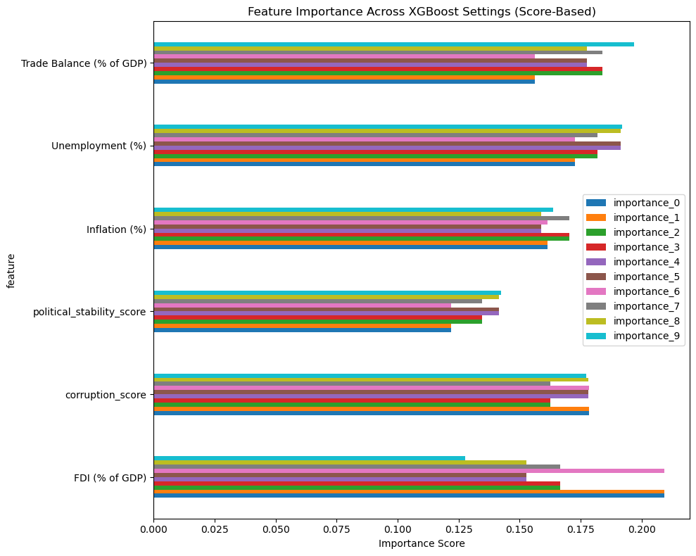
chosen_xgboost = XGBRegressor(n_estimators= 200, max_depth= 3, learning_rate= 0.1, random_state=42)
chosen_xgboost.fit(X, y)XGBRegressor(base_score=None, booster=None, callbacks=None,
colsample_bylevel=None, colsample_bynode=None,
colsample_bytree=None, device=None, early_stopping_rounds=None,
enable_categorical=False, eval_metric=None, feature_types=None,
feature_weights=None, gamma=None, grow_policy=None,
importance_type=None, interaction_constraints=None,
learning_rate=0.1, max_bin=None, max_cat_threshold=None,
max_cat_to_onehot=None, max_delta_step=None, max_depth=3,
max_leaves=None, min_child_weight=None, missing=nan,
monotone_constraints=None, multi_strategy=None, n_estimators=200,
n_jobs=None, num_parallel_tree=None, ...)In a Jupyter environment, please rerun this cell to show the HTML representation or trust the notebook. On GitHub, the HTML representation is unable to render, please try loading this page with nbviewer.org.
XGBRegressor(base_score=None, booster=None, callbacks=None,
colsample_bylevel=None, colsample_bynode=None,
colsample_bytree=None, device=None, early_stopping_rounds=None,
enable_categorical=False, eval_metric=None, feature_types=None,
feature_weights=None, gamma=None, grow_policy=None,
importance_type=None, interaction_constraints=None,
learning_rate=0.1, max_bin=None, max_cat_threshold=None,
max_cat_to_onehot=None, max_delta_step=None, max_depth=3,
max_leaves=None, min_child_weight=None, missing=nan,
monotone_constraints=None, multi_strategy=None, n_estimators=200,
n_jobs=None, num_parallel_tree=None, ...)y_pred = chosen_xgboost.predict(X)
r2 = r2_score(y, y_pred)
rmse = mean_squared_error(y, y_pred, squared=False) # squared=False gives RMSE directly
print(f"R²: {r2:.3f}")
print(f"RMSE: {rmse:.3f}")R²: 0.406
RMSE: 3.031c:\Users\ACER\anaconda3\envs\data_analysis\Lib\site-packages\sklearn\metrics\_regression.py:492: FutureWarning: 'squared' is deprecated in version 1.4 and will be removed in 1.6. To calculate the root mean squared error, use the function'root_mean_squared_error'.
warnings.warn(Using Partial Dependence Plot on the tree-based models
Decision Tree
from sklearn.inspection import PartialDependenceDisplay
# Make sure you're using the final trained XGBoost model (e.g., model)
features = [
('FDI (% of GDP)', 'political_stability_score'), # interaction PDP
('FDI (% of GDP)', 'corruption_score') # optional
]
PartialDependenceDisplay.from_estimator(
model, X,
features=features,
kind='average', # could also try 'both' for ICE + PDP
grid_resolution=20
)
plt.suptitle("Partial Dependence: FDI vs. Political Stability and Corruption", fontsize=14)
plt.gcf().set_size_inches(12, 8)
plt.show()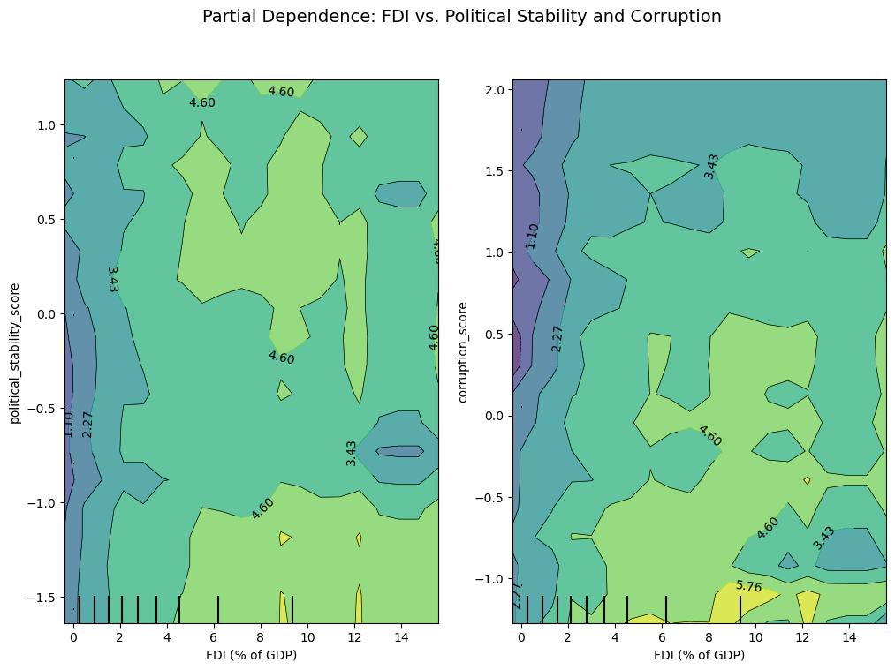
XGBoost
from sklearn.inspection import PartialDependenceDisplay
# Make sure you're using the final trained XGBoost model (e.g., model)
features = [
('FDI (% of GDP)', 'political_stability_score'), # interaction PDP
]
PartialDependenceDisplay.from_estimator(
chosen_xgboost, X,
features=features,
kind='average', # could also try 'both' for ICE + PDP
grid_resolution=20
)
plt.suptitle("Partial Dependence: FDI vs. Political Stability and Corruption", fontsize=14)
plt.show()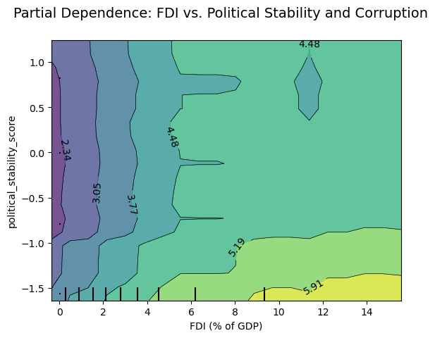
# Make sure you're using the final trained XGBoost model (e.g., model)
features = [
('FDI (% of GDP)', 'corruption_score') # optional
]
PartialDependenceDisplay.from_estimator(
chosen_xgboost, X,
features=features,
kind='average', # could also try 'both' for ICE + PDP
grid_resolution=20
)
plt.suptitle("Partial Dependence: FDI vs. Political Stability and Corruption", fontsize=14)
plt.gcf().set_size_inches(12, 8)
plt.show()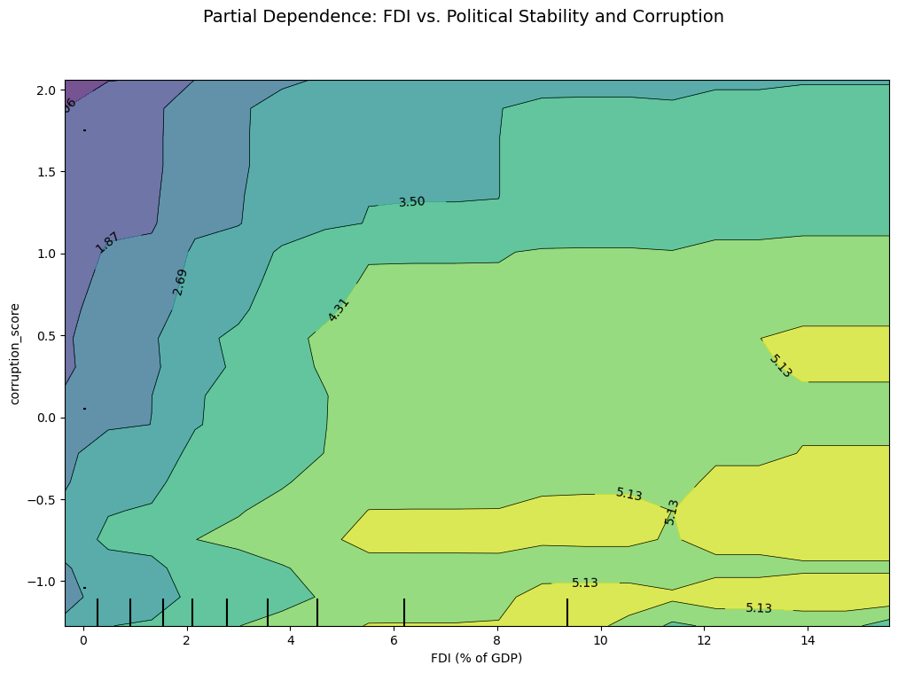
Using SHAP on the XGBoost
import shap
# --- Step 1: Create SHAP explainer ---
explainer = shap.Explainer(chosen_xgboost) # 'model' is your trained XGBRegressor
shap_values = explainer(X)
# --- Step 2: Summary plot (overall importance) ---
shap.summary_plot(shap_values, X, plot_type="bar")
# --- Step 3: Summary plot (per feature contribution) ---
shap.summary_plot(shap_values, X)
# --- Step 4: Interaction plots ---
# FDI × Political Stability
shap.plots.scatter(
shap_values[:, X.columns.get_loc('FDI (% of GDP)')],
color=shap_values[:, X.columns.get_loc('political_stability_score')],
title="SHAP Interaction: FDI vs Political Stability"
)
# Optional: FDI × Corruption
shap.plots.scatter(
shap_values[:, X.columns.get_loc('FDI (% of GDP)')],
color=shap_values[:, X.columns.get_loc('corruption_score')],
title="SHAP Interaction: FDI vs Corruption"
)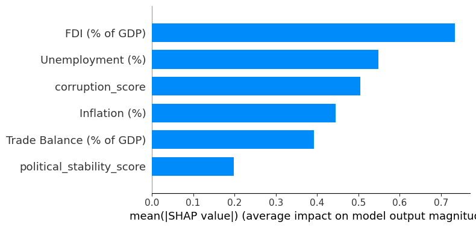
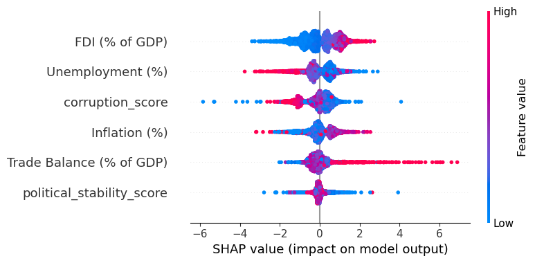
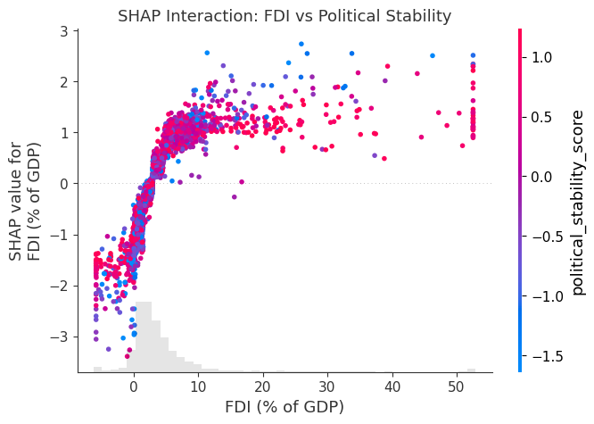
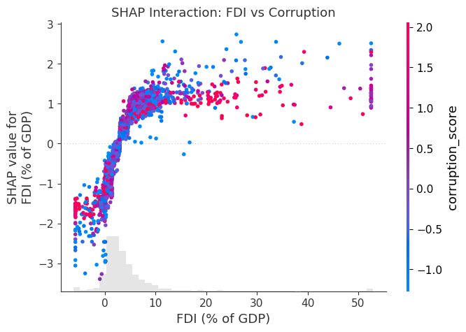
FDI * Political stability
This SHAP interaction plot shows that FDI tends to have a stronger positive impact on GDP growth in countries with lower political stability. As FDI increases, its effect on GDP growth (measured by SHAP value) rises more sharply when political stability is low (blue) compared to when it’s high (red).
This supports the idea that FDI may be more impactful in politically fragile contexts, possibly by compensating for institutional weaknesses or lack of domestic investment.
FDI * Corruption
While FDI generally increases predicted GDP growth across all levels of corruption, this SHAP interaction plot suggests that its effect is somewhat stronger in countries with lower corruption scores. In contrast, the benefit of FDI appears slightly diminished in more corrupt environments.
However, unlike the case with political stability, this interaction is weaker and more scattered, indicating that corruption may play a lesser or more nonlinear moderating role in FDI’s impact on growth.